Ethnics
Human ethnics
Emperian (Educated Folks)


The dominant human culture of the Lowlands, coming from a society that embraces scholarship, technology, magic, and the military in equal measure.
The Emperians are a cultured and exemplary urban society known for their advancements in magic, technology, and military strategy. While they lean towards the mystical, they are equally open to integrating both scientific and combat techniques into their society. They thrive in highly developed city areas, often associated with elegance and refined lifestyles. Socially adept and politically influential, they are known for their erudition, persuasion, and craftsmanship, making them prominent figures in the upper echelons of urban society.
Skills: Erudition, Persuasion, Spellcrafting, Technology, Negotiation, Communication, Craftsmanship, Investigation.
Personality traits: Organized, Ambitious, Courteous, Erudite (Bright), Progressive, Calculative, Confident, Hardworking, Principled, Open-minded.
Strong attributes: Intelligence, Cunning, Magic or Logic
Weak attributes: None
Birth attributes: -
Creation access: Free
Allegiance: Arcane, Magic, Steam, Technology, Destiny, or None
Living environment: Urban, City-dwelling, Rural
Birth particularity: Authority
Cultural particularity: Luck Affinity (1)
Origins: The ethnic capital of the Emperians is Alexandria, located in the Kingdom of New Arjan, within the Lowlands.
Religion: Mostly Ellendist, with many Chromites and a minority of Noshinists.
Kjeldorian (Cold-Folks)

 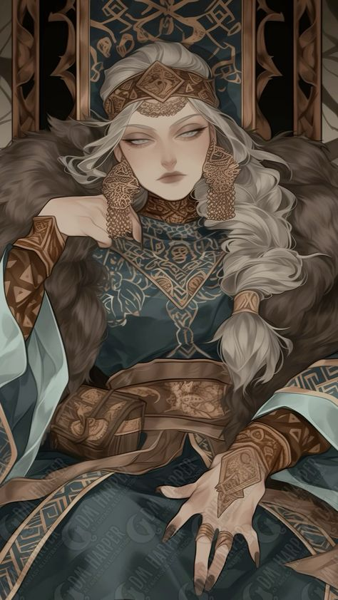
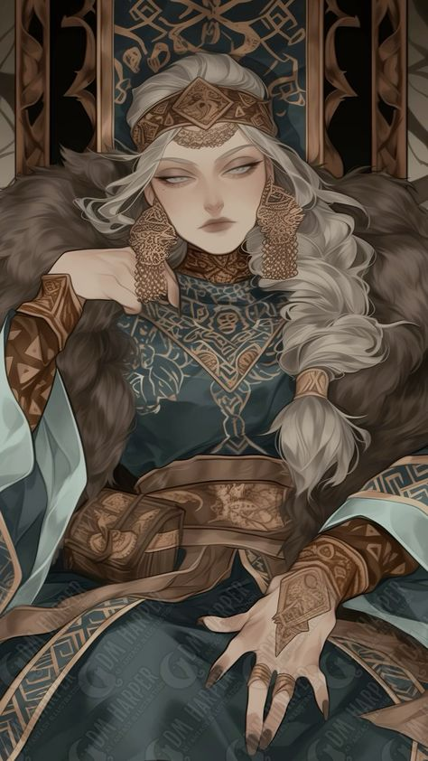
The inhabitants of the tundras and snow-capped mountains, known for their bravery, are excellent hunters of beasts and monsters. Nomads and warriors, they live in endless struggles, forged by the cold and the trials of their harsh environment.
Kjeldorians are master hunters and survivalists who thrive in tundra and cold areas. Their connection to the land and the harsh climate shapes their skills in tracking, hunting, and tactical warfare. Known for their strength, constitution, and perception, Kjeldorians excel in combat and endurance-related pursuits. Their society highly values resilience, defense, and strategic thinking, which are reflected in their abilities to navigate and thrive in unforgiving environments.
Skills: Hunting, Survival, Athletics, Throw, Endurance, Melee, Defense, Tactical.
Personality traits: Fearless, Hardworking, Stoic, Loyal, Cautious, Resourceful, Disciplined, Independent, Cold, Patient.
Strong attributes: Strength, Perception
Weak attributes: None
Birth attributes: Stature +0~2, Height +0~2, Luck –0~3
Creation access: Free
Allegiance: Nature, Destiny, or None
Living environment: Desertic, Rural, Urban
Birth particularity: Lucidity
Cultural particularity: Cold Affinity (1)
Origins: The ethnic capital of the Kjeldorians is Ys, located in the Kingdom of Kjeldora, within the Lowlands.
Attilian (Sand-Folks)


The sand of the lands of Atlas has tanned the dark skin of its inhabitants.
Those inhabitants of arid lands and burning deserts, are beings imbued with dark fury and fearsome inflexibility. Their noble sense of commerce and their unwavering determination make them feared and respected negotiators throughout the continent.
The Attilians are a hardy, resilient people who inhabit arid, desert-like regions. Known for their incredible willpower and survival skills, they are deeply connected to their harsh environment, developing a strong cultural emphasis on endurance and tactical strength. Their society values strength of character and physical prowess, and they are often described as unyielding and tenacious. Hunting and crafting are also central aspects of their lifestyle, enabling them to sustain themselves in challenging conditions.
Skills: Survival, Endurance, Melee, Tactical, Hunting, Athletics, Brawl, Craftsmanship.
Personality traits: Determined (Willing), Tough (Unshakeable), Demanding, Reserved (Discreet), Principled, Cautious, Enduring (Hardworking), Loyal, Serious, Conservative.
Strong attributes: Constitution, Cunning
Weak attributes: None
Birth attributes: Ego +1, Appearance –1
Creation access: Free
Allegiance: Destiny or None
Living environment: Desertic, Rural, Urban
Birth particularity: Adversity
Cultural particularity: Heat Affinity (1)
Origins: This information has not yet been written down
Rosalian (Lotus-Folks)

 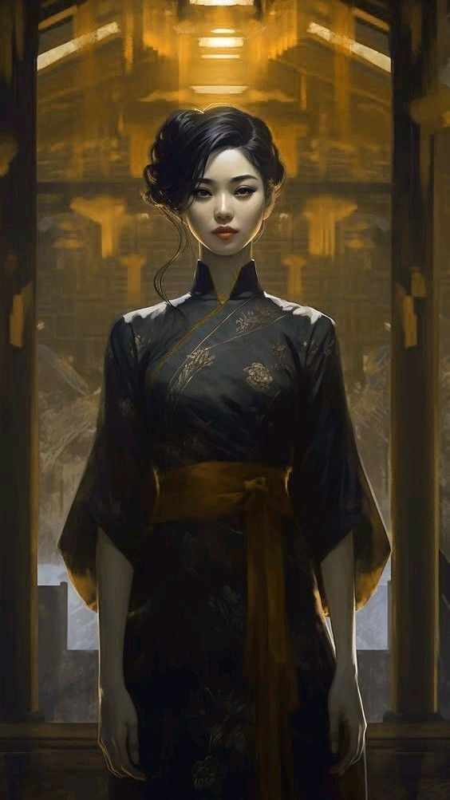
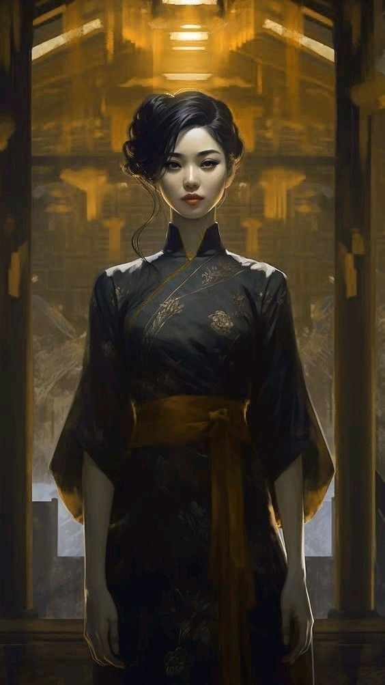
The inhabitants of the eastern lands are calm, wise and refined beings. Their mastery of tactical warfare, combat of honor and machinations hatched by shadowy hands is matched only by their apparent serenity.
Rosalians are a highly spiritual, traditional people with strong beliefs and customs. Inspired by Asian influences, they integrate meditation, magic, and craftsmanship into their way of life. Their society holds erudition and negotiation in high regard, and they are known for their diplomatic skills and depth of knowledge. Rosaliens excel in communication and persuasion, often taking on roles as mediators and advisors. Respect for history and culture is central to their identity.
Skills: Meditation, Spellcasting, Negotiation, Erudition, Persuasion, Survival, Craftsmanship, Communication.
Personality traits: Calm, Courteous, Wise (Bright), Principled, Modest, Patient, Calculative, Disciplined, Compassionate, Organized.
Strong attributes: Dexterity, Wisdom
Weak attributes: None
Birth attributes: Stature –0~1, Height –0~1, Ego +0~1, Appearance +0~1, Luck +0~1
Creation access: Free
Allegiance: Destiny or None
Living environment: Urban, City-dwelling, Rural
Birth particularity: Stealth
Cultural particularity: Calm Affinity (1)
Origins: The …
Albalonian (War-Folks)
 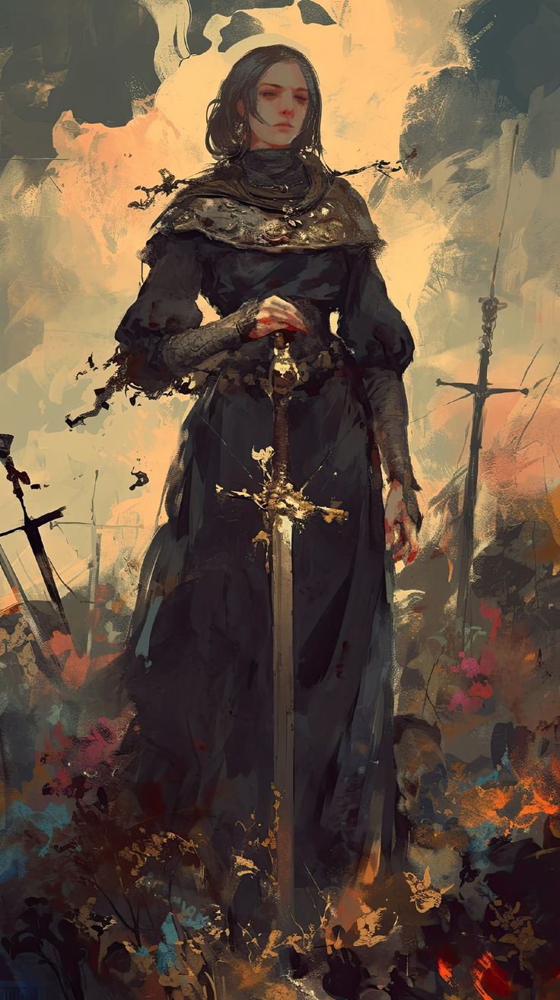
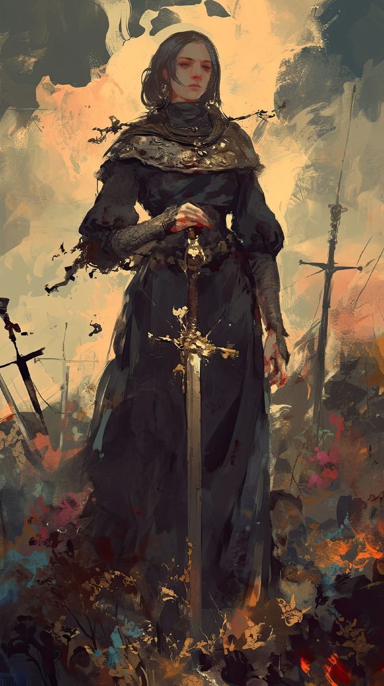


This people, forged by centuries of war and incessant battles, lives in a state of perpetual change of authority and fratricidal struggles. Here, each individual learns to wield a weapon from a young age, growing up in a culture where survival and strength dominate everything.
A militarized people with a centuries-long history of warfare, the Albalonians are fiercely dedicated to combat and tactics. Their society prioritizes physical strength, endurance, and defensive abilities, making them skilled fighters and strategic thinkers. Albalonians are deeply rooted in tradition and loyalty, often choosing lives of service and protection for their communities. They are natural leaders on the battlefield, known for their strong negotiation skills and unyielding tenacity.
Skills: Melee, Tactical, Endurance, Defense, Athletics, Brawl, Craftsmanship, Negotiation.
Personality traits: Aggressive, Fearless, Loyal, Stubborn, Competitive (Ambitious), Leader, Disciplined, Demanding, Impatient, Community-minded.
Strong attributes: Strength/Agility/Dexterity (choose one), Willpower
Weak attributes: This information has not yet been written down
Birth attributes: Ego +0~1, Appearance –0~1, Luck –0~1
Creation access: Free
Allegiance: Destiny or None
Living environment: City-dwelling, Rural
Birth particularity: Tenacity
Cultural particularity: War Affinity (1)
Origins: The …
Morrian (Dust-Folks)


This nomadic people, devoid of large cities, travel in tribes through the wild lands according to the seasons or live in hidden and secluded arboreal villages. Deeply anchored in their beliefs and superstitions, these people find guidance and meaning in the mysteries of nature.
Morrians are resilient, clan-based people who inhabit vast, desolate, and sparsely fertile lands. Known for their strong sense of community and sedentary lifestyle, Morrians rely heavily on farming and craftsmanship. They are hardy and skilled in survival, often working with the land to sustain their small communities. Their culture values practical skills and a strong work ethic, emphasizing endurance, defense, and tactical abilities in order to protect and maintain their lands.
Skills: Rural Life, Endurance, Craftsmanship, Brawl, Melee, Survival, Defense, Tactical.
Personality traits: Hardworking, Community-minded, Calm, Resourceful, Patient, Conservative, Cautious, Modest, Principled, Serious.
Strong attributes: Agility, Perception
Weak attributes: None
Birth attributes: Stature –1, Height +1
Creation access: Free
Allegiance: Destiny or None
Living environment: Rural, City-dwelling
Birth particularity: Swiftness
Cultural particularity: Desert Affinity (1)
Origins: The …
Titanian (Stone-Folks)


This people of solid mountain people, vigorous and enduring, was shaped by the harshness of their life and their proximity to the dwarven nations. Their iron will and unfailing courage make them unshakeable in the face of the most arduous challenges.
Skills: Endurance, Melee, Defense, Craftsmanship, Athletics, Survival, Tactical, Brawl.
Personality traits: Stoic, Proud (Pretentious), Fearless, Loyal, Hardworking, Conservative, Unshakeable, Serious, Disciplined, Cautious.
Strong attributes: Constitution, Willpower
Weak attributes: None
Birth attributes: Stature +1, Ego +1, Appearance –1, Luck –1
Creation access: Free
Allegiance: Destiny or None
Living environment: City-dwelling, Rural, Mountainous
Birth particularity: Boldness or Firmness
Cultural particularity: Mountain Affinity (1)
Origins: The …
Bretonian (Science-Folks)


This people has elevated spirit, through things such as sciences and knowledge, to the highest rank of their values. They privilege the mind over feats of arms, and put discoveries and exploration above conquests and military alliances.
Bretonians are a technologically advanced society known for their intellectual pursuits and achievements in craftsmanship and invention. They value knowledge, investigation, and communication, making them prominent figures in trade and innovation. Bretonians have a reputation for combining their technological advancements with spellcrafting, blending magic and science to create powerful tools and inventions. They are often found in city environments that prioritize progress and
Skills: Technology, Craftsmanship, Investigation, Tactical, Communication, Spellcrafting, Negotiation, Persuasion.
Personality traits: Curious, Organized, Progressive, Erudite (Bright), Calculative, Principled, Confident, Hardworking, Open-minded, Calm.
Strong attributes: Intelligence, Cunning, Logic
Weak attributes: None
Birth attributes: Ego +0~1, Appearance –0~1, Luck –0~1
Creation access: Free
Allegiance: Science, Technology, or None
Living environment: Urban or City-dwelling
Birth particularity: Insight
Cultural particularity: Technology Affinity (1)
Origins: The …
Aurian (Mystic-Folks)
This (currently extinguished) people are distant relatives to selunian elves.
Skills: ...
Personality traits: Elegant (Courteous), Erudite (Bright), Patient, Disciplined, Modest, Calm, Principled, Reserved (Secretive), Open-minded, Serious.
Strong attributes: Wisdom, Willpower, Magic
Weak attributes: This information has not yet been written down
Birth attributes: This information has not yet been written down
Creation access: This information has not yet been written down
Allegiance: This information has not yet been written down
Living environment: This information has not yet been written down
Birth particularity: This information has not yet been written down
Cultural particularity: This information has not yet been written down
Elven ethnics
Sylvanian
 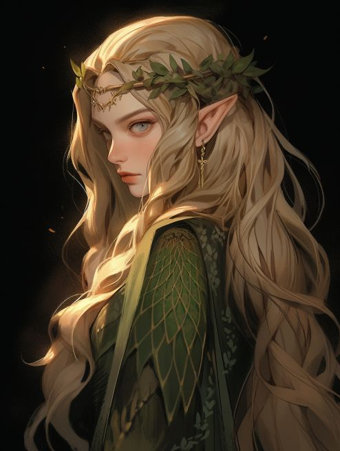
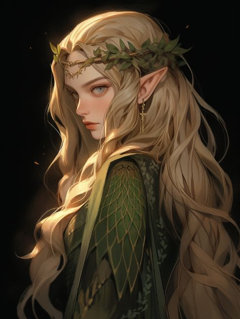


This people of wood elves, with tanned and dark skin, are often called the brown elves. They live in perfect harmony with the vegetation, particularly in the forest, and their natural habitats are sculpted into the trees, forming splendid cities which in no way disturb the tranquility of nature. Behind these bucolic aspects lies a culture closed in on itself and made up of relentless hunters.
The Sylvanians are forest-dwelling elves who live in harmony with nature. They rely on the gifts of the forest, practicing sustainable hunting, gathering, and woodworking. Sylvanians use magic cautiously and with respect for nature, and they possess an innate skill in tracking, survival, and melee combat. With scattered settlements across the lowlands, they influence the regions where they reside. Their culture is rooted in respect for flora and fauna, and they excel in crafts like woodworking and leatherworking.
Skills: Survival, Hunting, Spellcasting, Negotiation, Craftsmanship, Subterfuge, Melee, Defense.
Personality traits: Curious, Cautious, Disciplined, Community-minded, Serious, Patient, Resourceful, Loyal, Secretive, Alert.
Strong attributes: Perception, Wisdom
Weak attributes: None
Birth attributes: Stature 9, Height 9, Ego 11, Appearance 11, Luck 10
Creation access: Free
Allegiance: Nature, Source, or None
Living environment: Rural or Forest
Birth particularity: None
Cultural particularity: Forest Affinity (1), Leather Affinity (1)
Origins: The …
Selunian


These very sedentary people of pearly, pale-skinned elves, often called white elves, place magic at the heart of their culture. Their most valued habitats are erected by this magic, creating cities with perfect shapes, both geometrically, ergonomically and visually. Behind these aspects lies a culture that is very closed in on itself, not hesitating to exploit other races from the height of their ivory towers. White elf societies are generally composed of few elves, administering a large mass of humanoids who serve them, venerating their apparent superiority.
The Selunians are a mystical, refined society deeply connected to magic and scholarly pursuits. They incorporate magic into daily life—from construction to agriculture—and are known for their powerful mage academies, which produce elite magic-users. Selunians are relatively rare, and although they have few true settlements, they exert significant influence in certain human kingdoms, particularly in politics and the military. They are skilled in diplomacy and persuasion, and their culture emphasizes artistry and craftsmanship, particularly in textiles and statuary.
Skills: Spellcasting, Erudition, Persuasion, Craftsmanship, Negotiation, Spellcrafting, Meditation, Investigation.
Personality traits: Ambitious, Organized, Conservative, Courteous, Critical, Serious, Leader, Measured, Principled, Calm.
Strong attributes: Charisma, Willpower, Magic x2
Weak attributes: Balance
Birth attributes: Stature 8, Height 9, Ego 11, Appearance 12, Luck 10
Creation access: Free
Allegiance: Magic, Arcane, or None
Living environment: Urban, City-dwelling, or Rural
Birth particularity: None
Cultural particularity: Immaterial Affinity (1), Strengthened Allegiance (1), Fabric Affinity (1)
Origins: The …
Thalassian


These people of sea elves, with blue skin, often called blue elves, are sailors and travelers as well as excellent traders, seeking to establish contacts to ensure their sustainability. Distrustful of other cultures, they collaborate willingly as long as the remuneration is up to par. Blue elves live in coastal cities, boat cities sailing on the waves, or underwater domed cities. They are excellent swimmers.
Thalassians are water-oriented elves who feel at home near rivers, lakes, and oceans. Known for their agility and adaptability, they are skilled in navigation and swimming, sometimes creating underwater cities through magic. Thalassians are also natural traders, using their aquatic skills to establish strong commercial connections. Their craftsmanship often involves materials from the sea, like shells and coral, and they are effective negotiators. They’re found mainly in coastal areas, occasionally forming communities on the water itself.
Skills: Survival, Craftsmanship, Spellcrafting, Negotiation, Navigation, Swimming, Persuasion, Defense.
Personality traits: Friendly, Opportunistic, Adventurous, Resourceful, Energetic, Flexible (Rebellious), Confident, Talkative (Loudmouth), Curious, Pragmatic (Demanding).
Strong attributes: Agility, Intelligence
Weak attributes: None
Birth attributes: Stature 8, Height 9, Ego 10, Appearance 12, Luck 11
Creation access: Free
Allegiance: Magic or None
Living environment: Marine, City-dwelling, or Rural
Birth particularity: Amphibious (2)
Cultural particularity: Aquatic Affinity (1)
Origins: The …
Eldrazian


This people, known as ebony elves or dark elves, have skin as black as jet. Dark elves present two faces: publicly, they work as troubadours, advisors, courtiers... In the shadows, they are spies, assassins, and mercenaries. Dark elves are not born with dark skin; they develop it when their dark heart awakens. The community of dark elves is managed by an organization based in secluded citadels, overseeing the affairs of their members. A dark elf without ties to these communities eventually succumbs to their dark heart.
Eldrazians, or Black Elves, are a rare and enigmatic subgroup, often born among other elves. Recognized by their dark skin and intense disposition, they are highly disciplined, but without guidance, they may become violent and uncontrollable due to an innate “black gene.” Éldraziens live in secluded citadels where they learn to master their nature through rigorous training. Skilled in stealth, combat, and subterfuge, Éldraziens are often hired by human nobles as assassins, but they also serve as musicians, artists, or poets to mask their true purpose.
Skills: Melee, Subterfuge, Spellcasting, Brawl, Discretion, Tactical, Manipulation, Athletics.
Personality traits: Secretive, Calculative, Opportunistic, Disciplined, Intolerant, Critical, Ambitious, Stoic, Independent, Rebellious.
Strong attributes: Dexterity, Cunning, Charisma
Weak attributes: Wisdom
Birth attributes: Stature 9, Height 9, Ego 12, Appearance 11~12, Luck 8~9
Creation access: Free
Allegiance: Arcane or None
Living environment: Urban, City-dwelling, or Subterranean
Birth particularity: Night Vision (2)
Cultural particularity: Darkness Affinity (1), Poison Affinity (1)
Origins: The …
Urganian

 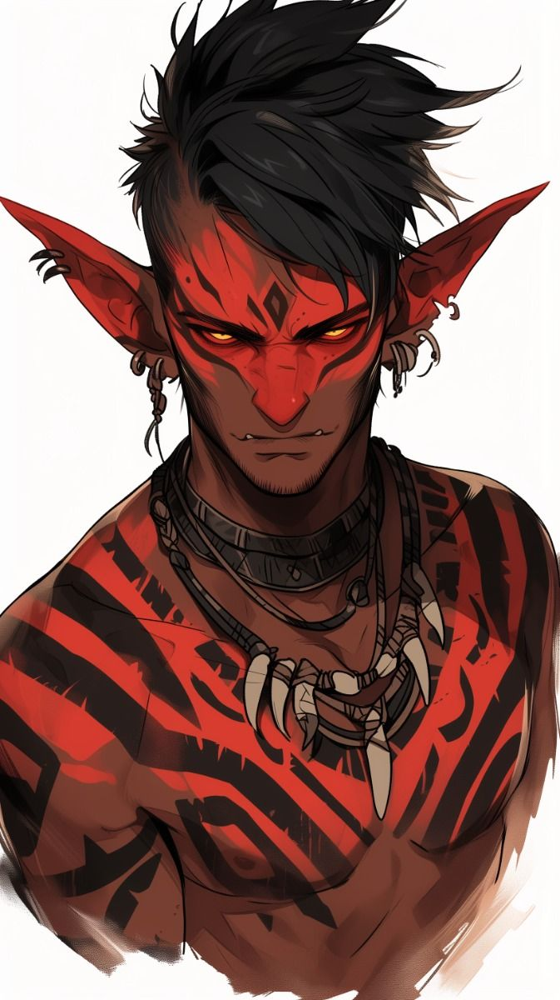
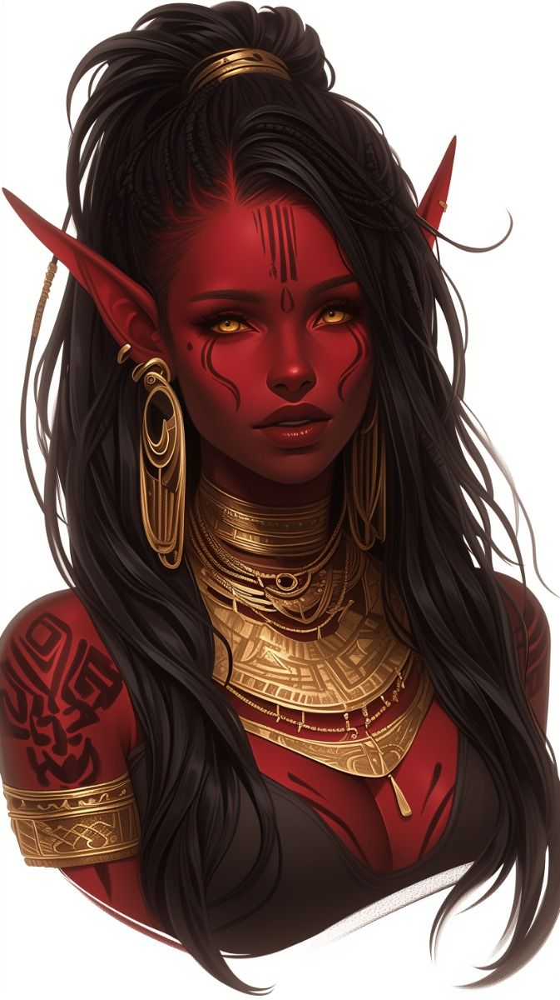
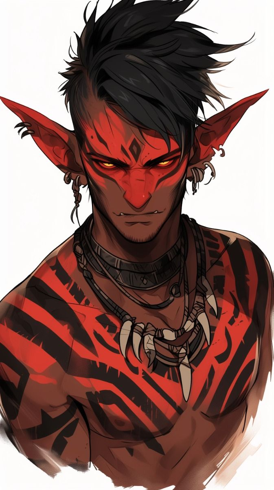
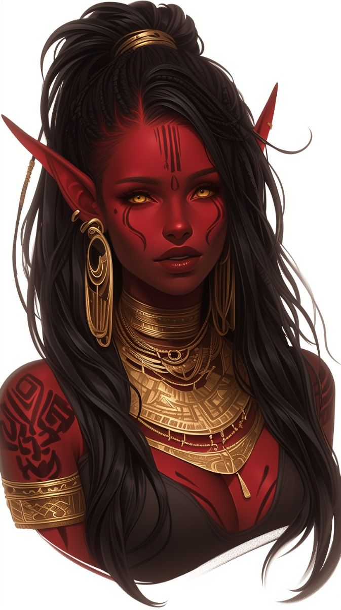
This people, known by few and called as such as ruby elves or red elves, have skin as red and radiant as rubies. Red elves have ardent hearts and live life with passion. Their society is reclusive, little known, and quite secretive; for some, they are merely legends, while others see them as outcasts who chose seclusion over facing the consequences of their ancestors' actions.
Urganian Elves are reclusive, mystical, and fierce. They are known for their deep connection to magic and meditation, often adopting an austere, disciplined lifestyle that emphasizes self-control and focus. Unlike other elves, Urganians exhibit a strict, almost authoritarian attitude. Though rare, they are known for their strategic prowess in both magical and tactical domains. They are also skilled in persuasion and subtlety, often using their knowledge and experience to influence others indirectly.
Skills: Spellcasting, Melee, Tactical, Persuasion, Defense, Meditation, Erudition, Subterfuge.
Personality traits: Serious, Disciplined, Conservative, Ascetic, Organized, Patient, Calm, Leader, Cold, Principled.
Strong attributes: Constitution, Luck
Weak attributes: None
Birth attributes: This information has not yet been written down
Creation access: This information has not yet been written down
Allegiance: This information has not yet been written down
Living environment: This information has not yet been written down
Birth particularity: This information has not yet been written down
Cultural particularity: This information has not yet been written down
Origins: The …
Half Elves


Half-Elves occupy a delicate place between two worlds. Neither entirely human nor fully elven, they often embody the best—and sometimes the worst—of both lineages. Their mixed heritage grants them remarkable adaptability, whether socially, magically, or physically, but also exposes them to mistrust from purist elven communities and suspicion from humans who see them as unpredictable.
Half-Elves do not form their own nations. Instead, they grow up within human or elven societies, inheriting the cultural environment of their parents. Because of this, no two Half-Elves are alike: some display the finesse and longevity of their elven lineage, while others lean toward human resilience and ambition. Many develop the ability to navigate between cultures with surprising ease, becoming diplomats, adventurers, scouts, or intermediaries in conflicts between humans and elves.
Their dual identity sometimes creates inner conflict, leading them either to wander in search of a place they truly belong, or to embrace their hybrid nature with pride. Half-Elves are often curious, adaptable, and perceptive, capable of learning quickly and excelling in roles requiring flexibility, negotiation, or creativity.
Skills: Inherits the skills of either parent (player’s choice)
Personality traits: Inherits the personality traits list of both parent
Strong attributes: Inherits the strong attributes of both parent, but halved
Weak attributes: Inherits the weak attributes of both parent, but halved
Birth attributes: This information has not yet been written down
Creation access: Free
Allegiance: Inherits the allegiance list of both parent
Living environment: Inherits the living environment list of both parent
Birth particularity: Inherits the birth particularities of either parent (player’s choice)
Cultural particularity: Inherits the affinities of either parent (player’s choice)
Origins: The …
Dwarf ethnics
Bradanan


Commonly called city dwarves, this dwarf people live very close to humans, who find them notably valuable due to their excellence in fields such as craftsmanship, technology, and management. Unlike their kin, the culture of Brandanan does not place much importance on their hair, so they often have smaller beards or mustaches, and sometimes are even clean-shaven. This is a source of humor for other dwarf peoples, who enjoy referring to them as gnomes rather than dwarves. But they nonetheless remain a robust and stubborn people who are rather reliable.
The Bradanan are dwarves who have assimilated into advanced human cities, thriving as engineers, craftsmen, and technologists. They are known for their pragmatism and adaptability in human-dominated environments, often bridging the gap between traditional dwarven skills and advanced sciences. Unlike other dwarves, Bradanan embrace innovation fully and distance themselves from mystical practices. They possess exceptional skill in ranged combat (e.g., throwing or shooting), technology, and various forms of crafting, making them invaluable assets in urban settings.
Also called Brandawis.
Skills: Craftsmanship, Technology, Persuasion, Erudition, Investigation, Negotiation, Shooting, Tactical.
Personality traits: Hardworking, Disciplined, Conservative, Critical, Stubborn, Community-minded, Serious, Loyal, Patient, Modest.
Strong attributes: Perception, Intelligence, Logic
Weak attributes: Balance
Birth attributes: Stature 12, Height 7, Ego 12, Appearance 8, Luck 11
Creation access: Free
Allegiance: Steam, Science, or None
Living environment: Urban or City-dwelling
Birth particularity: Passive trait (Memory +1)
Cultural particularity: Urban Affinity (1), Strengthened Allegiance (1), Aetheric Affinity (1)
Origins: The …
Karazdan


 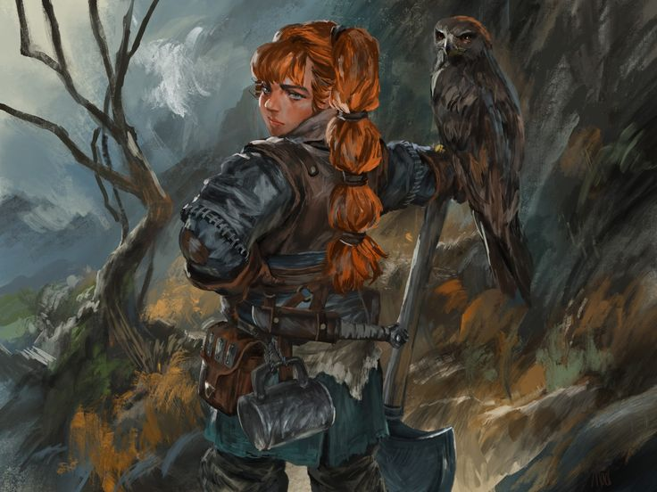
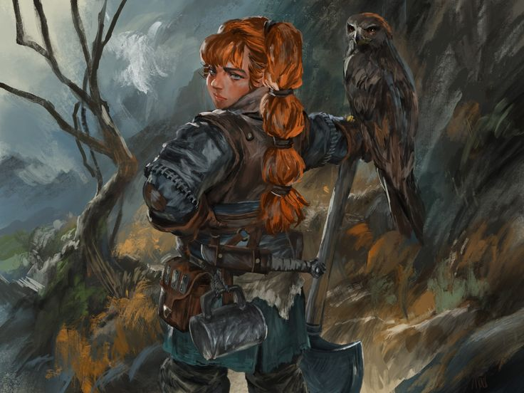
The society of the Karazdan is generally perceived as the "main" society of this race, as it represents the overwhelming majority. It is divided into clans with distinct and diverse orientations. These dwarves have a notable culture of beards and similar attributes. Their braids and beard or hair decorations are marks of good taste and often say a lot about them, especially if they are paragons. Dwarves have no deities; instead, they refer to paragons, illustrious dwarves who have left a significant mark on their society in the present OR in the past and continue to convey notions that inspire current generations.
The Karazdan are the core ethnic group of dwarven society, representing the primary dwarven culture and lineage from which other clans draw their heritage. They live in rocky, hilly regions, practicing a robust lifestyle that emphasizes defense, mining, and physical endurance. The Karazdan who do not belong to specific clans are loyal to the High King, the central figure of dwarven sovereignty, whose authority unites the separate clan lords. Karazdan culture is rooted in loyalty, respect for tradition, and a strong emphasis on physical prowess, making them steadfast defenders of dwarven values.
Also called Karazdawis.
Skills: Craftsmanship, Melee, Defense, Endurance, Tactical, Athletics, Brawl, Mining.
Personality traits: Hardworking, Aggressive, Fearless, Stubborn, Conservative, Community-minded, Imposing, Serious, Loyal, Resentful.
Strong attributes: Strength, Constitution + the ones associated to the choosen clan
Weak attributes: Agility, Dexterity
Birth attributes: Stature 13, Height 7, Ego 12, Appearance 8, Luck 10
Creation access: Free
Allegiance: Steam or None
Living environment: Subterranean, Mountainous, City-dwelling, or Rural
Birth particularity: Night Vision (1), Passive Trait (Control Zone +1)
Cultural particularity: Subterranean Affinity (1), Mountain Affinity (1), Vermin Animosity (1), Elf Animosity (1), Metal & Stone Affinity (1)
Origins: The …
Clan of the Shield
The Clan of the Shield serves as the military backbone of dwarven society, specializing in combat and defense. Members of this clan are formidable warriors who act as protectors of dwarven lands, standing ready to defend their territories or maintain peace among other clans. Their values center on loyalty, endurance, and tactical prowess, and they are often called upon to mediate conflicts due to their impartiality. Shield dwarves are known for their strength and discipline, with leadership roles that make them essential in times of conflict.
Strong attributes: Constitution, Willpower Skills: Melee, Defense, Craftsmanship, Tactical, Athletics, Endurance, Brawl, Leadership.
Clan of the Temple
The Temple Clan is composed of dwarves who serve as keepers of tradition, scholars, and religious figures within dwarven society. Although dwarves cannot wield magic, Temple Clan members are experts in dwarven lore, rituals, and the construction of war machines that aid in warfare. Their skills in meditation and erudition make them highly respected for their wisdom and dedication to preserving dwarven culture. They also support the military through engineering and craftsmanship, constructing structures and machinery essential for the dwarven way of life.
Strong attributes: Willpower, Wisdom Skills: Spellcrafting, Erudition, Meditation, Craftsmanship, Persuasion, Defense, Investigation, Leadership.
Clan of the Talion
The Talion Clan is the wealthiest and most politically influential among the dwarves. They excel in negotiation, persuasion, and commerce, controlling much of the dwarven trade networks and economic activities. Members of the Talion Clan are known for their cunning and business acumen, often relying on a secretive organization, the Black Lodge, to secure their interests. Skilled in both subterfuge and manipulation, the Talion Clan dwarves are shrewd merchants and negotiators, placing wealth and power at the forefront of their priorities.
Strong attributes: Constitution, Cunning Skills: Negotiation, Subterfuge, Persuasion, Manipulation, Larceny, Investigation, Erudition, Spellcrafting.
Clan of the Forge
The Forge Clan forms the industrial backbone of dwarven society, primarily involved in metallurgy, mining, and weapon crafting. These dwarves are highly skilled blacksmiths and metalworkers, crafting some of the finest weapons, armor, and tools. Known for their resilience and work ethic, Forge Clan dwarves are respected for their knowledge of metals and resource extraction, making them central to the dwarven economy and defense. They are also strong negotiators, often dealing with human societies to secure raw materials and trade.
Strong attributes: Strength, Constitution Skills: Craftsmanship, Endurance, Defense, Melee, Technology, Survival, Athletics, Brawl.
Clan of the Malt
The Malt Clan is well-known for their expertise in brewing, agriculture, and rural craftsmanship. They focus on producing the resources necessary for dwarven communities, especially food and drink, including the renowned dwarven ales. The Malt Clan also engages in trade with human settlements, where their brewed products are highly valued. These dwarves are practical and hardworking, and they excel in craftsmanship, particularly in areas related to food, drink, and other essential goods.
Strong attributes: Constitution, Charisma Skills: Craftsmanship, Endurance, Rural Life, Persuasion, Technology, Negotiation, Athletics, Brawl.
Clan of the Errants
Errant Clan dwarves are outcasts, often due to social or political conflicts. Forced to live outside traditional dwarven society, they are nomadic and focus on self-sufficiency. Known for their survival skills, Errant dwarves are adept at living off the land and have minimal access to traditional dwarven wealth. While they cannot own gold or weapons, Errant dwarves rely on discretion, craftsmanship, and combat skills to survive, often in isolation from other dwarves. They represent a life of simplicity and resilience, embodying the rugged spirit of dwarven heritage.
Strong attributes: Willpower, Wisdom Skills: Survival, Rural Life, Endurance, Craftsmanship, Melee, Athletics, Discretion, Brawl.
Ungordan


The Ungordan are the dwarves of the depths, residing in vast underground cities carved into the heart of the mountains. These dwarves live far below the surface, in a world of perpetual darkness illuminated only by the glow of luminescent fungi and the forge fires of their cities. Their society is highly structured, with a rigid caste system that dictates every aspect of their lives.
Ungordan, also known as the Deep Dwarves, inhabit the underground depths known as the Tréfonds. Separated physically and culturally from surface-dwelling dwarves, the Ungordan have little in common with their kin above. In fact, they view surface dwarves as “deviants” or “denatured,” having lost their connection to the true dwarven way. The Ungordan excel in survival, tactical combat, and mining, navigating the dangerous tunnels and caverns with unmatched skill. They are known for their disdain of the surface and their emphasis on resilience and unity in the harsh, unforgiving depths.
Also called Ungordawis.
Ungordan Society:
- Deep Lords - At the top of the hierarchy are the Deep Lords, ruling from magnificent halls adorned with intricate stonework and precious gems. They govern the Ungordan with an iron fist, making decisions that affect the entire society.
- Artisans and Smiths - Skilled craftsmen who create the finest weapons, armor, and artifacts. Their work is highly valued, and they are respected for their expertise in metallurgy and stonecraft.
- Warriors and Guards - Trained from a young age, these dwarves defend the cities from the dangers of the deep, including monstrous creatures and rival factions. Their discipline and combat skills are unmatched.
- Miners and Excavators - The backbone of Ungordan society, these dwarves labor tirelessly to extract precious minerals and expand their subterranean realms. Their work is grueling and dangerous, but essential for the survival of their people.
- Merchants and Traders - These dwarves manage the flow of goods within the cities and trade with surface dwellers, though such interactions are rare and often fraught with tension. They play a crucial role in ensuring the cities are well-supplied.
- Servants and Laborers - The lowest caste, performing the menial tasks that keep the cities running. Despite their low status, they are an integral part of the Ungordan society.
Skills: Survival, Melee, Defense, Tactical, Endurance, Mining, Spellcrafting, Investigation.
Personality traits: Stoic, Disciplined, Secretive, Conservative, Hardworking, Pessimistic, Cautious, Loyal, Serious, Unshakeable.
Strong attributes: Strength, Constitution (x2)
Weak attributes: Cunning, Wisdom
Birth attributes: Stature 14, Height 7, Ego 13, Appearance 7, Luck 9
Creation access: Free
Allegiance: Steam, Ankou, or None
Living environment: Subterranean
Birth particularity: Night Vision (2), Passive Trait (Physical/Mental Protection +1)
Cultural particularity: Subterranean Affinity (1), Vermin Animosity (1), Elf Animosity (1), Spawn Animosity (1), Metal & Stone Affinity (1)
Origins: The …
Feral ethnics
The appearance of ferals is that of anthropomorphic animals. Depending on the individual, the propensity to which animal heritage is visible changes drastically.
Some ferals have an appearance very similar to that of the animal they inherited.
For others it is limited to a few visible features (ears, tails, etc.) and that's it.
In terms of proportion, in Thalifen, we note among males a higher concentration of so-called "bestial" appearances and among women a higher concentration of so-called "human" appearances. In reality, there is everything in nature and males can have a very marked human appearance just as a female can have a very marked bestial appearance.
Okkan (wolf-folks)


 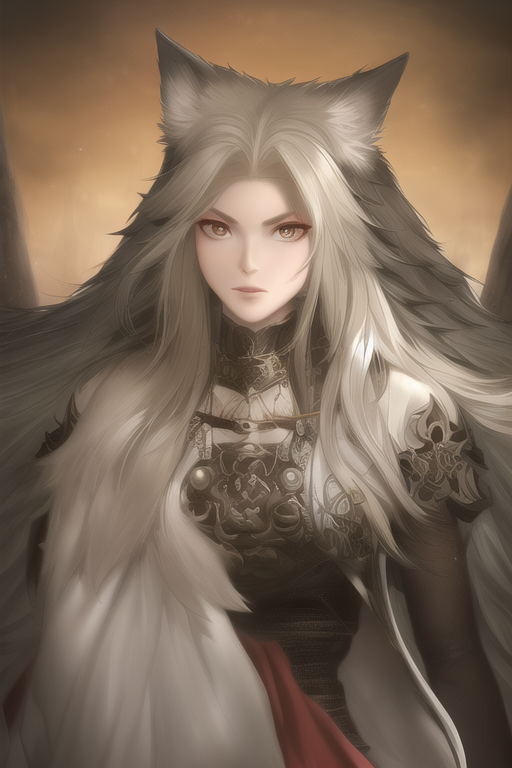
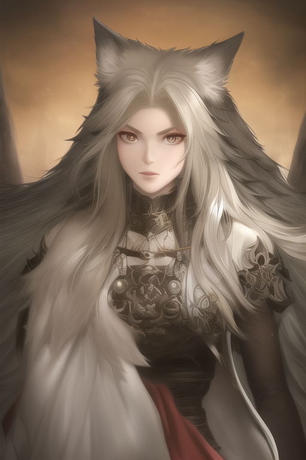
The Okkan are wolf-like humanoids who live in close-knit clan structures, much like wolf packs. Known for their wisdom and strong social bonds, they value loyalty, community, and cooperation. They are spread across the lowlands and are among the more sociable feral groups, often integrating well with other cultures. Okkan are peaceful by nature, usually avoiding conflict, but they are highly perceptive and adept at defending themselves and their clans when necessary. They are considered pacifist ferals, generally not seeking conflict with other cultures.
Skills: Survival, Hunting, Defense, Endurance, Detection, Communication, Athletics, Spiritism.
Personality traits: Loyal, Community-minded, Protective (Alert), Courageous (Fearless), Warm, Resourceful, Patient, Serious, Independent, Cautious.
Strong attributes: Perception, Wisdom (x2)
Weak attributes: None
Birth attributes: Stature 10, Height 10, Ego 10, Appearance 10, Luck 10
Creation access: Free
Allegiance: Nature, Magic, or None
Living environment: Forest, Nomadic, Rural
Birth particularity: Natural Weapons (Claws, Fangs) (1), Danger Sense (1)
Cultural particularity: Forest Affinity (1), Pack Instinct
Origins: The …
Nature: Pacifist.
Totem: Uhlo, the Unifier.
Nekkan (Cat-folk)

 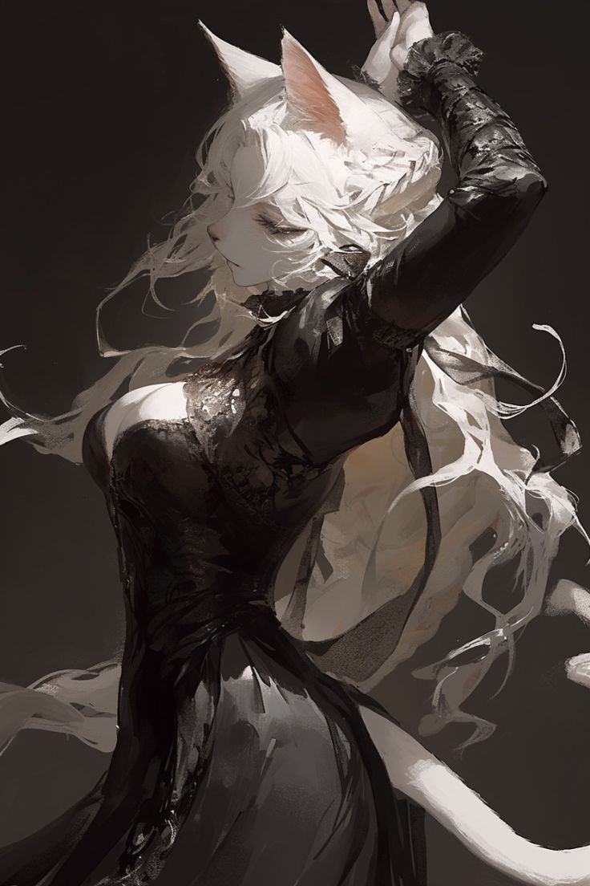
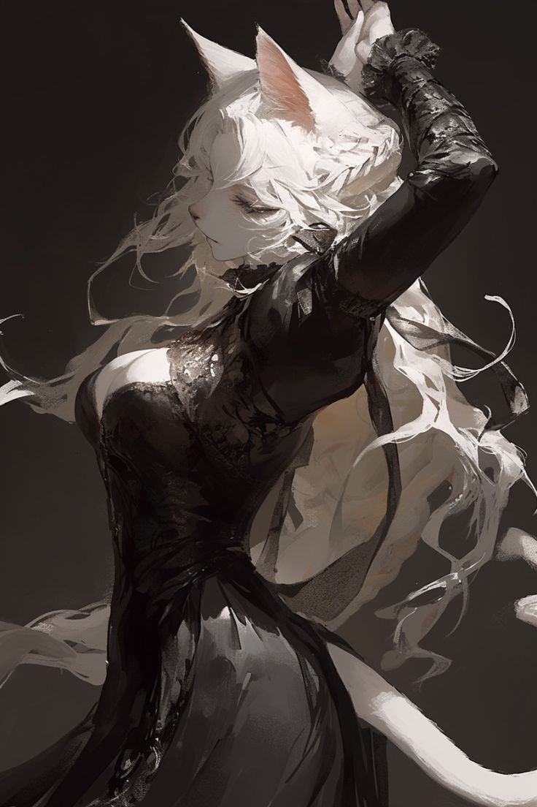
These humanoids with cat-like traits are mischievous, playful, curious, and stealthy. They tend to avoid settling in societies of their own, preferring instead to integrate into larger human cities, where they can indulge their cunning and blend in with other cultures. They are quick-witted and agile, excelling in stealth and subterfuge, but are often perceived as untrustworthy due to their tendency to bend or ignore rules. They are considered pacifist ferals who do not seek direct conflict.
Skills: Subterfuge, Discretion, Larceny, Finesse, Urban Life, Negotiation, Acrobatics, Persuasion.
Personality traits: Curious, Independent, Secretive, Playful, Opportunistic, Cautious, Spontaneous, Free-spirited, Lazy, Proud (Pretentious).
Strong attributes: Agility (x2), Cunning
Weak attributes: None
Birth attributes: Stature 9, Height 9, Ego 9, Appearance 11, Luck 12
Creation access: Free
Allegiance: Nature, Source, Destiny, or None
Living environment: Nomadic, Rural, City-dwelling
Birth particularity: Natural Weapons (Claws, Fangs) (1), Danger or Fear Sense (1)
Cultural particularity: Darkness Affinity (1), Feline Instincts, Black Cat
Origins: The …
Nature: Pacifist.
Totem: Adis, the Whisperer in Shadows.
Felkkan (Lion-folk)


This tribe of humanoids with lion-like features are impressive figures, strong and proud, courageous and imposing. They are quite rare and live in scattered clans across the hot lands of Atlas. Occasionally, they can be found in other cultures where they are highly regarded for their leadership abilities. They are regarded as predatory ferals who avoid direct conflicts but stand resolutely against any threats, fiercely defending their territory.
Skills: Melee, Survival, Athletics, Defense, Tactical, Endurance, Detection, Persuasion.
Personality traits: Imposing, Leader, Fearless, Proud (Pretentious), Loyal, Aggressive, Competitive (Ambitious), Community-minded, Energetic, Reckless.
Strong attributes: Strength, Charisma, Willpower
Weak attributes: Cunning
Birth attributes: Stature 11, Height 10, Ego 11, Appearance 9, Luck 9
Creation access: Free
Allegiance: Nature, Source, or None
Living environment: Nomadic, Desert (hot), Mountain
Birth particularity: Natural Weapons (Claws, Fangs) (2), Fear Sense (1)
Cultural particularity: Bestial Instincts (Adrenaline)
Origins: The …
Nature: Predatory.
Totem: Eaos, the Boundless Sovereign.
Koddan (Bear-folk)


This tribe of humanoids with bear-like features are as massive and imposing as they are patient and wise. Though they may not excel in advanced intelligence, they possess a profound understanding of the world, with which they share a special connection. They give off an impression of immutable strength. They are quite rare and live in scattered clans across the cold lands of Kjeldor. Occasionally, they can be found in other cultures, where they are highly esteemed for their great wisdom coupled with their imposing stature that deters missteps. They are considered pacifist ferals who do not seek direct conflict.
Skills: Survival, Endurance, Athletics, Hunting, Detection, Rural Life, Defense, Mysticism.
Personality traits: Calm, Patient, Warm, Protective (Alert), Hardworking, Community-minded, Serious, Principled, Optimistic, Measured.
Strong attributes: Strength, Constitution, Wisdom
Weak attributes: Agility
Birth attributes: Stature 13, Height 12, Ego 7, Appearance 10, Luck 8
Creation access: Free
Allegiance: Nature, Magic, or None
Living environment: Cold Desert and Mountain
Birth particularity: Natural Weapons (Claws, Fangs) (2), Force of Nature (2), Danger Sense (1)
Cultural particularity: Cold Affinity (1), Survival Instincts (Guardian)
Origins: The …
Nature: Pacifist.
Totem: Oborh, the Patient Beast.
Bedokkan (Reptile-folk)


This tribe of humanoids, distinguished by their lizard-like features, excels in the arts of survival and hunting. They lead a life of simplicity, dwelling within the swamps and other humid regions they call home. Renowned as formidable warriors, they possess an exceptional aptitude for enduring the harshest conditions. It is exceedingly rare to encounter them in proximity to, or in collaboration with, other cultures, whose advanced ways and intricate traditions they find excessively elaborate. They mostly refuse any contact with others, even feral beings, preferring instead the purity of a more unadorned existence. They are regarded as predatory ferals who avoid direct conflicts but stand resolutely against any threats, fiercely defending their territory.
Skills: Survival, Hunting, Brawl, Endurance, Detection, Craftsmanship, Rural Life, Athletics.
Personality traits: Aggressive, Opportunistic, Cautious, Calculative, Stoic, Resourceful, Independent, Serious, Fearless, Suspicious (Intolerant).
Strong attributes: Dexterity, Perception
Weak attributes: None
Birth attributes: Stature 12, Height 11, Ego 9, Appearance 8, Luck 10
Creation access: Free
Allegiance: Nature, Source, Ankou, or None
Living environment: Marine and Forest
Birth particularity: Natural Weapons (Claws, Fangs) (3), Tail (2), Amphibious (1), Fear Sense (1)
Cultural particularity: Aquatic Affinity (1), Hunting Instinct
Origins: The …
Nature: Predatory.
Totem: Brera, the Reclusive Tyrant.
Garukkan (Bird-folk)


This ethnic group of feral beings embodies the diverse and varied aspects of birds. They are tenacious and self-assured, characterized by a considerable ego and a generally noteworthy eloquence. These beings readily integrate into human cultures, where they enjoy a certain renown, both for their noble appearance and their aptitude for sociability. However, this ethnicity suffers somewhat from the dispersion of its members, who rarely cultivate a sense of belonging to a common family. As a result, their numbers are few, and this is not likely to change soon. Among them, some are pacifists, while others, more akin to raptors, are predators who do not hesitate to resolve personal conflicts with bloodshed.
Skills: Acrobatics, Athletics, Persuasion, Communication, Endurance, Defense, Rural Life, Finesse.
Personality traits: Curious, Optimistic, Adventurous, Free-spirited, Bright, Expressive, Community-minded, Calm, Welcoming, Independent.
Strong attributes: Perception (x2), Willpower
Weak attributes: Constitution
Birth attributes: Stature 9, Height 9, Ego 10, Appearance 11, Luck 11
Creation access: Free
Allegiance: Nature, Magic, or None
Living environment: Marine, Mountain, Forest
Birth particularity: Natural Weapons (Talons) (1), Winged Creature (1), Danger Sense (1), Freedom Instinct
Cultural particularity: Height Affinity (1)
Origins: The …
Nature: Predatory or Pacifist.
Totem: Reean, the Splendor of the Sky.
Luppan (Leporid-folk)


This ethnic group of feral beings consists of individuals who are generally laid-back and fond of a good life, yet also fearful and quick to flee rather than confront. They appear as humanoids with lupine traits, resembling rabbits or hares. They cherish life's pleasures and constantly devise numerous ways to avoid the toil of labor, earning them a somewhat tarnished reputation among other cultures that value merit and dedication. It is said that fortune smiles upon them, and whether true or not, this belief grants them a certain audacity in risky situations, although they still prefer to avoid such scenarios. Naturally, these people are pacifists and are also excellent artists. They are considered pacifist ferals who do not seek direct conflict... In fact, they avoid ALL conflicts.
Skills: Art, Finesse, Discretion, Communication, Persuasion, Acrobatics, Survival, Subterfuge.
Personality traits: Cautious, Nervous, Alert, Community-minded, Loyal, Hardworking, Patient, Indulgent, Homebound, Sensitive.
Strong attributes: Agility, Charisma, Luck
Weak attributes: Balance
Birth attributes: Stature 9, Height 9, Ego 8, Appearance 12, Luck 12
Creation access: Free
Allegiance: Nature, Magic, Destiny, or None
Living environment: Forest and Rural
Birth particularity: Natural Weapons (Claws) (1), Danger Sense (2)
Cultural particularity: Prudence Affinity (1), Alert Instinct
Origins: The …
Nature: Pacifist.
Totem: Zolir, the Little One.
Leokkan

 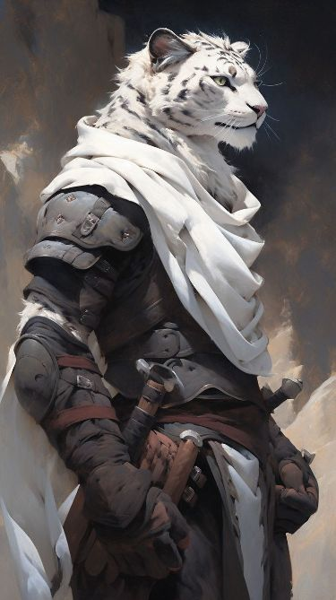
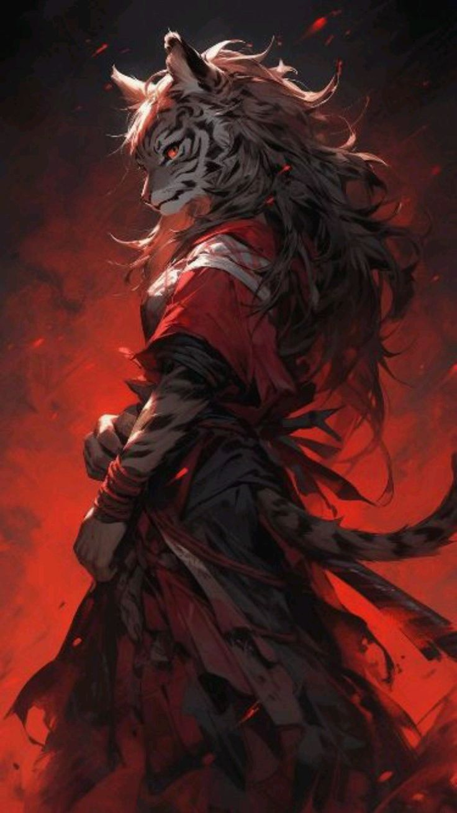
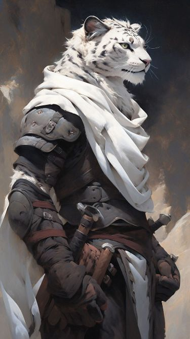
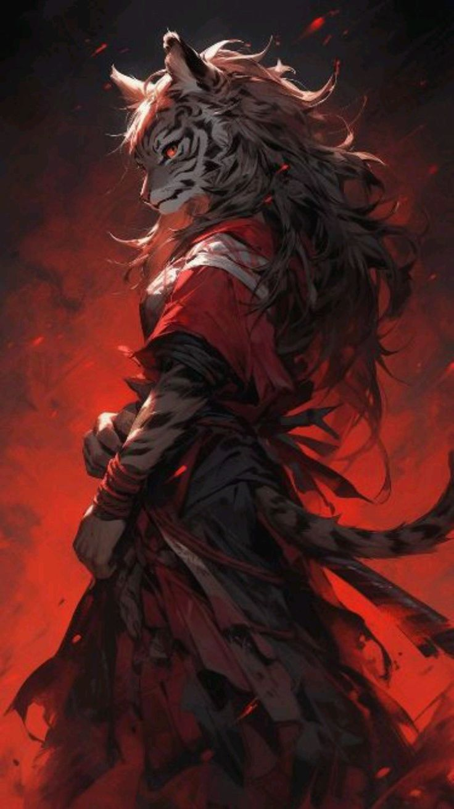
This ethnic group of feral beings comprises feline humanoids, bearing the traits of tigers, leopards, or cheetahs. They form a disparate populace without real attachments, moving in small, nomadic communities when gathered. Driven by an innate and intense selfishness, they remain indifferent to the rest of the world, guided by a keen sense of hunting and self made traditions. This people is highly predatory.
Skills: Melee, Hunting, Detection, Athletics, Finesse, Survival, Subterfuge, Persuasion.
Personality traits: ?.
Strong attributes: Dexterity (x2), Charisma
Weak attributes: Constitution
Birth attributes: This information has not yet been written down
Creation access: This information has not yet been written down
Allegiance: This information has not yet been written down
Living environment: This information has not yet been written down
Birth particularity: This information has not yet been written down
Cultural particularity: This information has not yet been written down
Origins: The …
Nature: Predatory.
Totem: Ekneas, the Gracious Beast.
Cervikkan


This ethnic group of feral beings consists of cervine humanoids, adorned with antlers that grow more majestic (and cumbersome) with age. They are imbued with ego and self-confidence, yet they generally match their words with deeds. Though not the most skilled or formidable warriors, they do not forsake their values in the face of adversity. They hold oral traditions and legends in high esteem. Above all, they are pacifists.
Skills: Rural Life, Hunting, Detection, Persuasion, Athletics, Survival, Defense, Know How.
Personality traits: ?.
Strong attributes: Constitution, Willpower
Weak attributes: Cunning
Birth attributes: This information has not yet been written down
Creation access: This information has not yet been written down
Allegiance: This information has not yet been written down
Living environment: This information has not yet been written down
Birth particularity: This information has not yet been written down
Cultural particularity: This information has not yet been written down
Origins: The …
Nature: Pacifist.
Totem: Cevdos, the Father of All Lands.
Razzan (Rat-folk)


This ethnic group of feral beings consists of individuals who have the appearance of humanoids with rodent traits, such as rabbits or hares. They are industrious and do not shy away from hard work. Clever, helpful, and tireless workers, they are not known for artistic talents but are instead connoisseurs of fine food. They love to snack throughout the day and hold a genuine reverence for the various meals. Generally easy-going and amiable, they are highly appreciated by those around them.
Skills: Craftsmanship, Rural Life, Know How, Medicine, Detection, Communication, Hunting, Survival.
Personality traits: Opportunistic, Resourceful, Curious, Secretive, Envious, Cautious, Spontaneous, Chaotic, Suspicious (Intolerant), Independent.
Strong attributes: Perception, Cunning
Weak attributes: Willpower
Birth attributes: Stature 9, Height 9, Ego 11, Appearance 8, Luck 13
Creation access: Free
Allegiance: Nature, Source, Destiny, Ankou, or None
Living environment: Subterranean, City-dwelling, Rural
Birth particularity: Natural Weapons (Claws) (1), Tail (1), Danger Sense (1)
Cultural particularity: Filth Affinity (1), Venal Instinct
Origins: The …
Nature: Pacifist.
Totem: ?, the ?.
Peskkan
 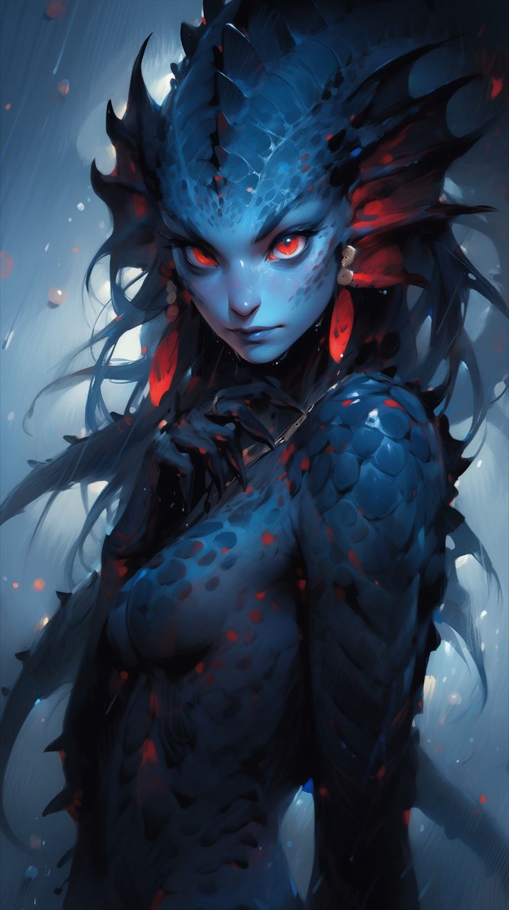
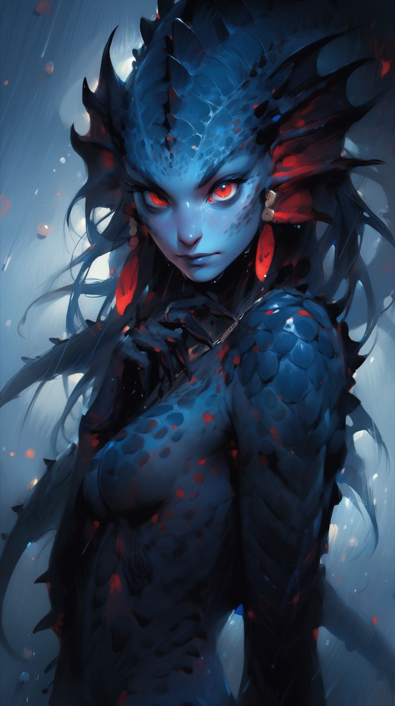
 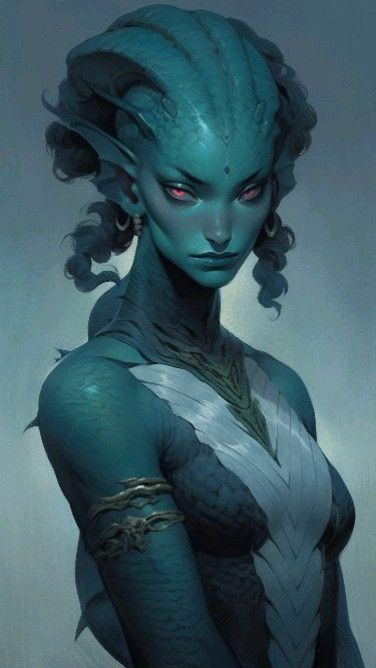
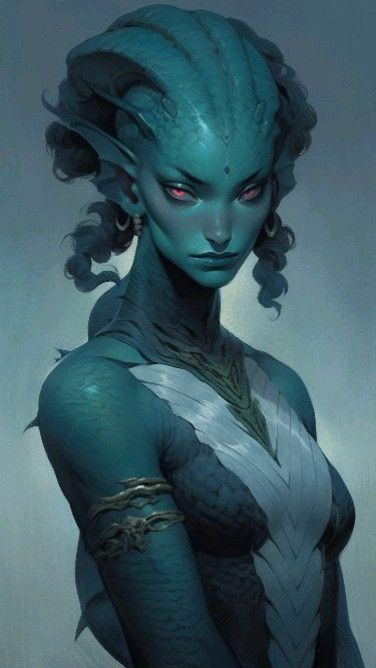
This ethnic group of feral beings comprises humanoids with traits derived from various fish, inheriting features from graceful dolphins to mysterious octopuses and formidable sharks. They live in varying degrees of cooperation with the blue elves, who share their preferred habitats, and remain rather distant from humanoids in general, convinced that the latter do not sufficiently respect the land of their birth. Members of this species intermingle regardless of their bestial ancestry, resulting in a highly disparate society.
They are either pacifists or predators depending on their sub-ethnicity, but if they seek conflict, it is usually on an individual basis.
Skills: Survival, Occultism, Detection, Hunting, Investigation, Spiritism, Acrobatics, Subterfuge.
Personality traits: ?.
Strong attributes: Agility, Willpower
Weak attributes: None
Birth attributes: This information has not yet been written down
Creation access: This information has not yet been written down
Allegiance: This information has not yet been written down
Living environment: This information has not yet been written down
Birth particularity: This information has not yet been written down
Cultural particularity: This information has not yet been written down
Origins: The …
Nature: Predatory or Pacifist.
Totem: Edea, the Mother of All Sees.
Taurran


This tribe of humanoids with bull-like features, complete with horns and a robust frame, as muscular and intimidating as they are composed and respectful. Though they possess a hot-headed temperament, they maintain a notable martial culture based on instinct and controlled fury. Despite their impulsive nature, they are a fundamentally reasonable people, primarily nomadic, roaming the vast expanses of the Morrian lands. They are rare and live in scattered clans, nestled in underground areas or ruins which saw them for their tranquility and their immensity. A good number of them live alone, far from all social ties, it's a kind of lifestyle that pushes them to refocus on themselves. Their code of honor revolves around strength and wisdom, embodying a balanced blend of body and mind. They are pacifists, but of a type that few predators seek quarrels with.
Skills: Melee, Athletics, Endurance, Survival, Defense, Tactical, Brawl, Rural Life.
Personality traits: ?.
Strong attributes: Strength (x2), Constitution, Wisdom
Weak attributes: Cunning
Birth attributes: This information has not yet been written down
Creation access: This information has not yet been written down
Allegiance: This information has not yet been written down
Living environment: This information has not yet been written down
Birth particularity: This information has not yet been written down
Cultural particularity: This information has not yet been written down
Origins: The …
Nature: Pacifist.
Totem: Siion, the Majestuous Horned Lord.
Cursed Feral ethnics
Oni (onikkan) (Jackal-folk)
 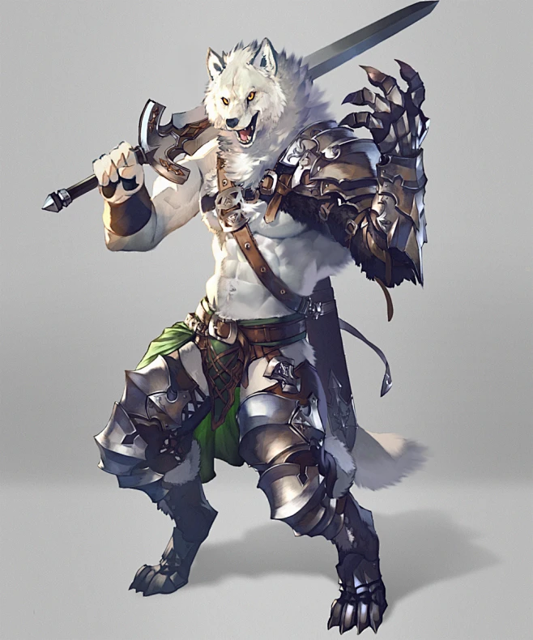
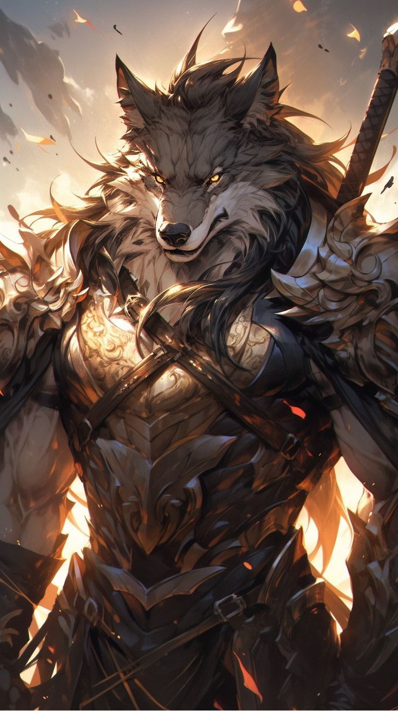
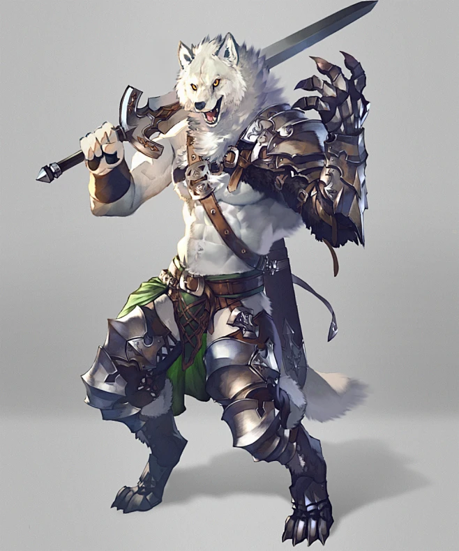
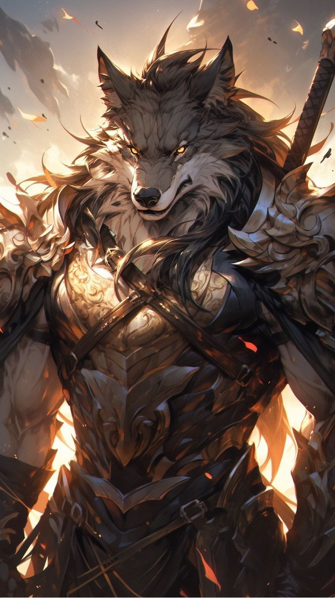

The Oni are cousins of the Okkans, humanoids with wolf features. Physically they are distinguished by a denser coat and/or darker tons.
As with the other so-called cursed ferals, they are touched by what some may describe as an illness which makes them associable at best, they therefore evolve little in society and when this is the case violence reigns supreme.
The evil that afflicts the Oni is resentment and jealousy, prompt to violent urge.
They are true predators.
Skills: Melee, Brawl, Endurance, Athletics, Subterfuge, Detection, Mysticism, Occultism.
Personality traits: Opportunistic, Aggressive, Cunning (Calculative), Suspicious (Intolerant), Fearless, Envious, Resourceful, Rebellious, Secretive, Impatient.
Strong attributes: Strength, Dexterity
Weak attributes: Luck
Birth attributes: Stature 11, Height 10, Ego 11, Appearance 8, Luck 10
Creation access: Free
Allegiance: Nature, Source, Ankou, or None
Living environment: Forest, Nomadic, Desert (hot/cold), Mountain
Birth particularity: Natural Weapons (Claws, Fangs) (2), Fear Sense (2)
Cultural particularity: Blood Affinity (1), Blood Instincts
Origins: The …
Nature: Predatory.
Totem: Ouros, the Disastrous Fang.
Kitsune
 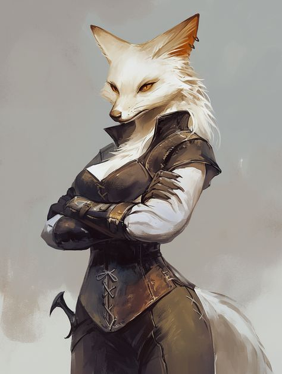
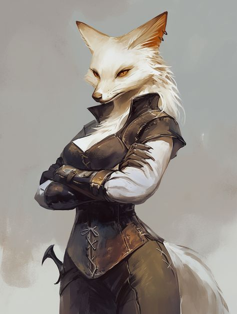


The Oni are cousins of the Okkans, humanoids with fox features. Physically they are distinguished by the presence of multiple tails, particularly bushy, and by red tones.
As with the other so-called cursed ferals, they are touched by what some may describe as an illness which makes them associable at best, they mosty never unit as a clan, driven by a personality focused exclusively on themselves.
The evil that afflicts the Oni is curiosity and frivolity, nothing is really serious to them, not even life.
They are somewhat neutral and doesn't define themselves as pacifists or predators, more like mediators or something alike.
Skills: Subterfuge, Discretion, Persuasion, Mysticism, Spellcrafting, Occultism, Detection, Finesse.
Personality traits: Curious, Playful, Opportunistic, Spontaneous, Expressive, Free-spirited, Trickster (Liar), Energetic, Independent, Indulgent.
Strong attributes: Charisma, Cunning
Weak attributes: Luck
Birth attributes: Stature 9, Height 9, Ego 10, Appearance 11, Luck 11
Creation access: Free
Allegiance: Nature, Source, Destiny, or None
Living environment: Forest, Nomadic, Desert (hot/cold), Mountain, Rural
Birth particularity: Natural Weapons (Claws, Fangs) (1), Danger or Fear Sense (1)
Cultural particularity: Curiosity Affinity (1), Curious Instinct
Origins: The …
Nature: Pacifist.
Totem: Eaos, the Mischivious Hundred Tails.
Tengu (Raptor-folk)


The Tengu are bird-like humanoids who embody the darker, more aggressive aspects of their avian lineage. While the Garukkan exhibit sociability and pride, the Tengu embrace tenacity, independence, and cunning with a more ominous undertone. Known for their eloquence and intelligence, Tengu are highly self-assured, with a significant ego that often leads to isolation from others, even within their own kind. Unlike the Garukkan, who enjoy mingling with other societies, the Tengu view the world with suspicion and prefer to operate alone or in small, tightly knit groups.
Tengu are natural predators, and some are known to resolve conflicts with lethal efficiency. Tengu society is loosely structured, lacking a true sense of community, as most members act according to personal codes of honor or vendettas. These dark, solitary beings are rarely seen in friendly terms with other cultures and are often feared or misunderstood for their ruthlessness and fierce independence.
Skills: Acrobatics, Detection, Athletics, Brawl, Finesse, Survival, Communication, Throw.
Personality traits: Aggressive, Ambitious, Competitive, Fearless, Proud (Pretentious), Rebellious, Opportunistic, Energetic, Reckless, Independent.
Strong attributes: Intelligence (x2), Cunning
Weak attributes: Cunning, Luck
Birth attributes: Stature 10, Height 10, Ego 12, Appearance 8, Luck 10
Creation access: Free
Allegiance: Nature, Magic, Ankou, or None
Living environment: Marine, Mountain, Forest
Birth particularity: Natural Weapons (Talons) (1), Winged Creature (1), Fear Sense (1)
Cultural particularity: Height Affinity (1), Freedom Instinct
Origins: The …
Nature: Predatory.
Totem: Fydall, the Boundless Nightmare.
Razkkan

 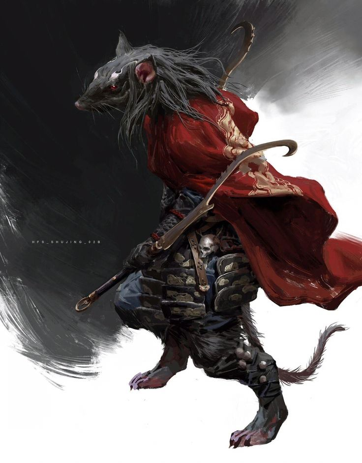
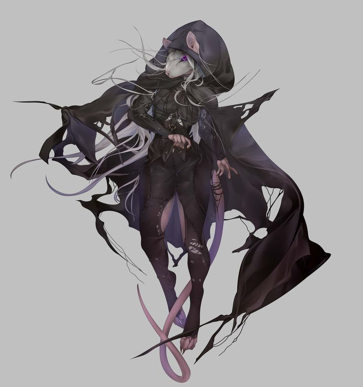
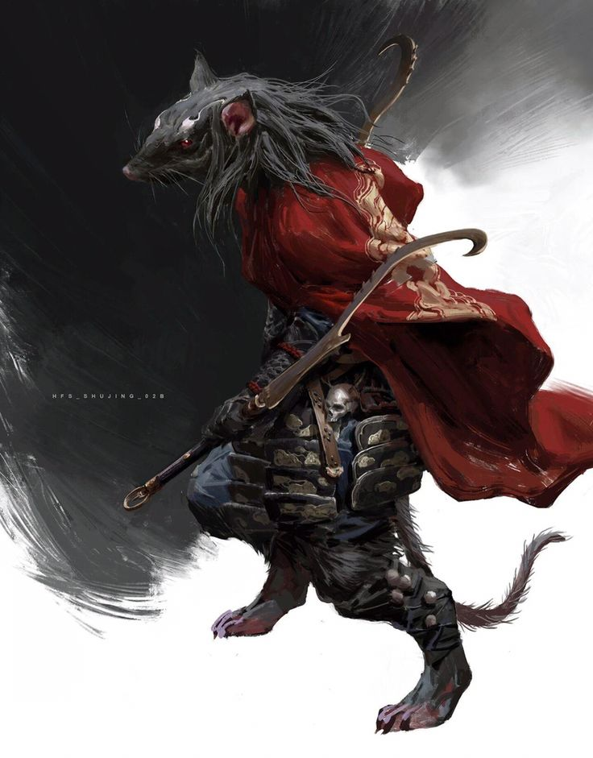
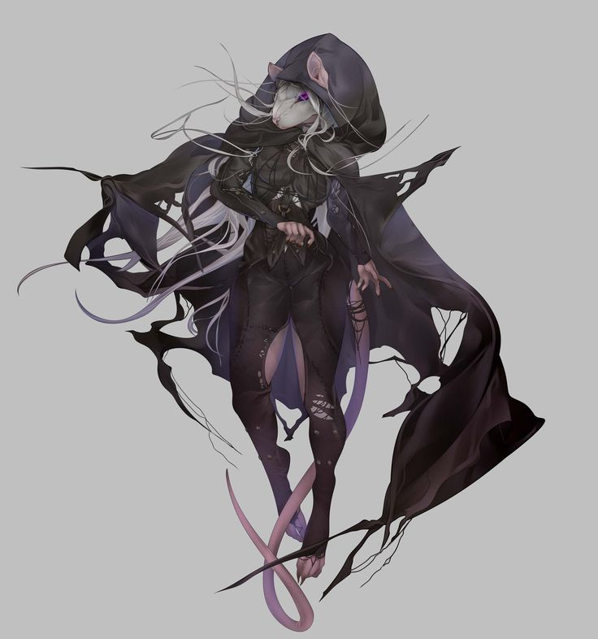
The Skaven are rat-like humanoids living in tunnels, ruins, and hidden areas. They are highly cunning and ruthless, with a society driven by personal gain and constant infighting. Known for their stealth, larceny, and survival skills, Skaven are adept at infiltration and scavenging, often using poisons, diseases, and crude technologies to their advantage. They rarely cooperate with others and are notorious for betrayal.
Skills: Larceny, Subterfuge, Occultism, Discretion, Detection, Urban Life, Investigation, Brawl.
Personality traits: ?.
Strong attributes: Agility, Cunning
Weak attributes: Willpower, Luck
Birth attributes: This information has not yet been written down
Creation access: This information has not yet been written down
Allegiance: This information has not yet been written down
Living environment: This information has not yet been written down
Birth particularity: This information has not yet been written down
Cultural particularity: This information has not yet been written down
Origins: The …
Nature: Predatory.
Totem: Zegen, the Rotten Ambition.
Urssian (Grizzly-folk)

 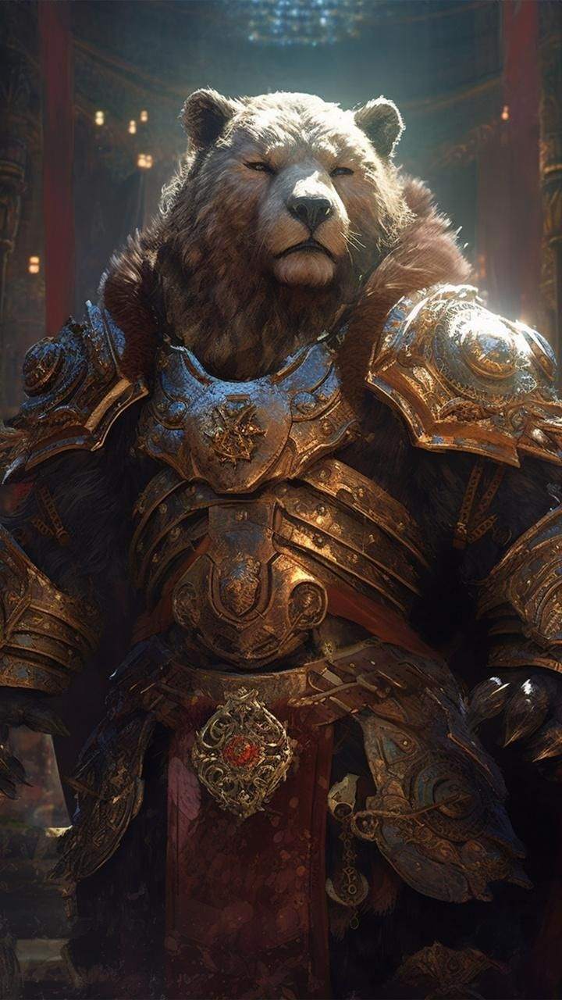
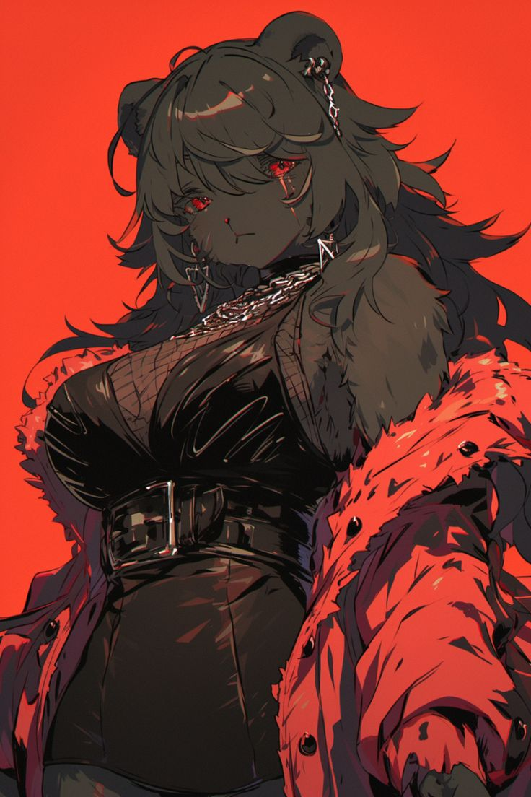
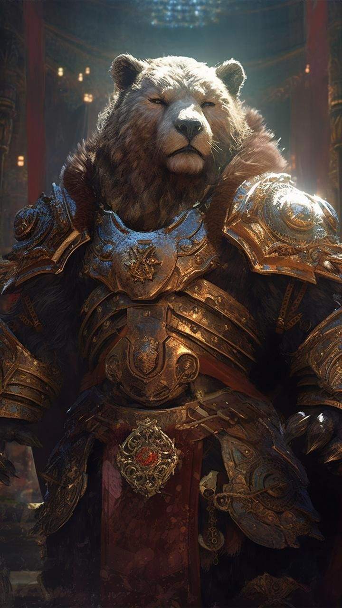
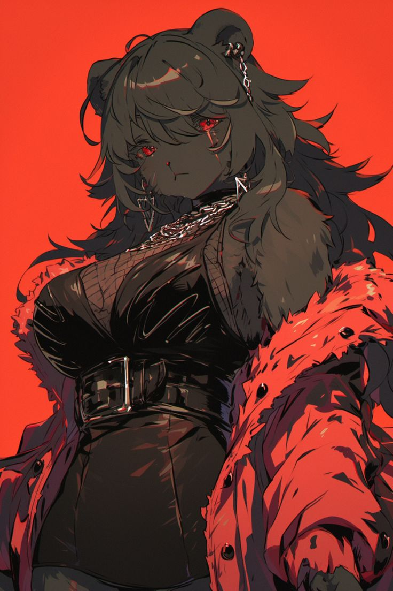
The Urssian are a feral ethnicity similar to the Koddans, but with a more aggressive and violent culture. Known for their sheer physical strength and a social structure that values might above all, Urssians believe that power determines status and respect. They are often found in rugged, mountainous regions, where they maintain a life of endurance and combat readiness. Conflict and displays of dominance are central to their way of life.
Skills: Melee, Defense, Endurance, Athletics, Craftsmanship, Detection, Rural Life, Tactical.
Personality traits: Stoic, Imposing, Aggressive, Loyal, Protective (Alert), Hardworking, Stubborn, Serious, Cautious, Resentful.
Strong attributes: Strength, Constitution (x2)
Weak attributes: Luck
Birth attributes: Stature 12, Height 13, Ego 11, Appearance 7, Luck 7
Creation access: Free
Allegiance: Nature, Source, Ankou, or None
Living environment: Cold Desert and Mountain
Birth particularity: Natural Weapons (Claws, Fangs) (2), Force of Nature (2), Fear Sense (1)
Cultural particularity: Mountain Affinity (1), Furious Instincts (Rage)
Origins: The …
Nature: Predatory.
Totem: Udtar, the Juggernaut.
Minor Feral ethnics
Not all animal breeds are represented in the rules because some of them represent the majority of existing individuals/declinations, but there are many more than that in nature corresponding to minorities scattered here and there. We will then speak of minor feral ethnicity and in these cases it is proposed to use the profile of an equivalent major ethnicity.
| Ethnics | Animal | Attributes | |-----------|-------------------------------| | Pandarran | Panda | Constitution, Wisdom | | Raskkan | Shark | Stength, Cunning |
Demie ethnics
Halfling
 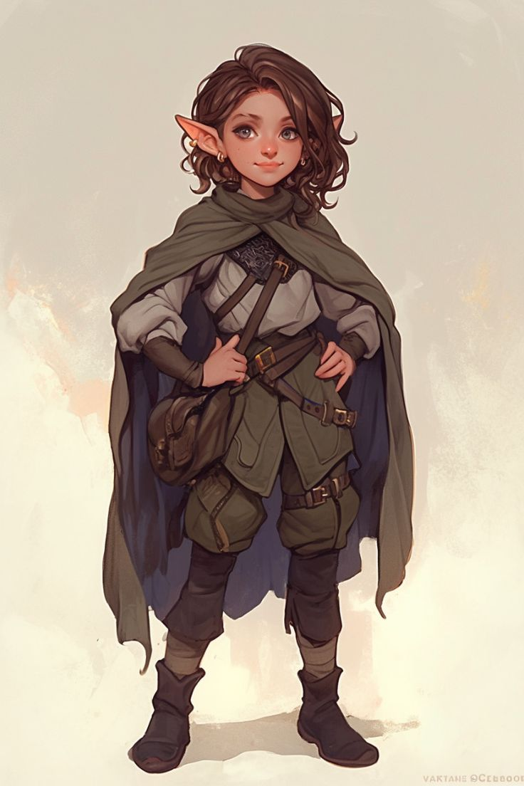
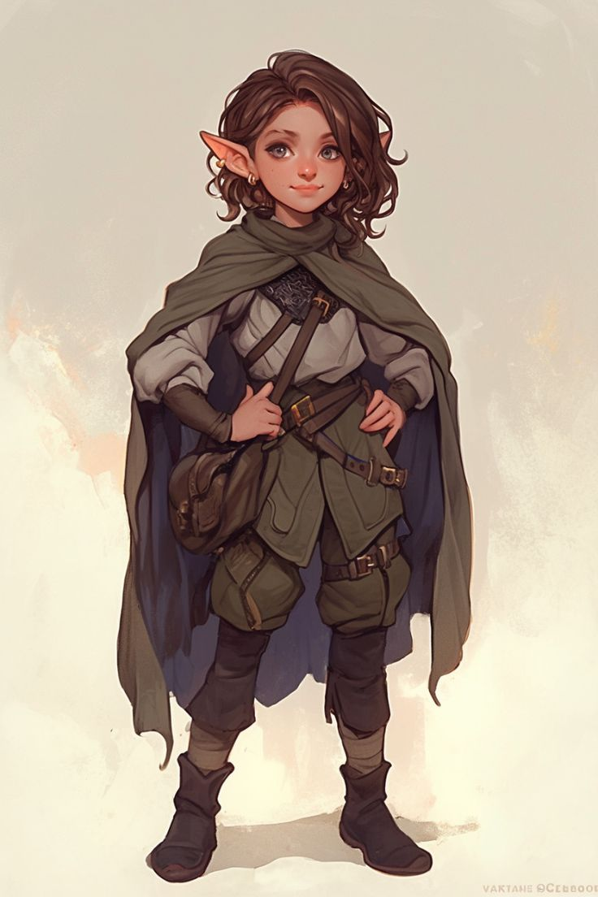


Halflings are small folk gifted with a disarming youthful appearance that makes suspicion slip right past them. Their round faces, bright eyes, and lively manners suggest innocence—even when they are far from it. This lack of perceived threat is both a blessing and a curse: they avoid trouble easily, yet they are rarely taken seriously, even when they should be.
Living mostly among human societies—and, more rarely, elven ones—Halflings blend effortlessly into larger cultures, adapting to their customs while keeping their own traditions mostly unspoken. A long-standing rumor claims they have a homeland of their own, a hidden place of green hills and cozy burrows. Halflings themselves speak of it fondly, yet none can say if it truly exists. They were taught never to seek it, as if the myth itself mattered more than the truth; a story they cling to for comfort, identity, or perhaps something deeper.
Behind their cheerful faces lie sharp instincts for survival, negotiation, and quiet mischief—traits born from a life lived on the edge of obscurity.
Skills: Persuasion, Discretion, Acrobatics, Larceny, Survival, Negotiation, Finesse, Communication.
Personality traits: Friendly, Playful, Optimistic, Curious, Resourceful, Homebound, Community-minded, Indulgent, Talkative (Loudmouth), Avoidant.
Strong attributes: Dexterity, Agility, Perception, Luck (x2)
Weak attributes: Strength, Charisma
Birth attributes: Stature 8, Height 6, Ego 7~9, Appearance 10~12, Luck 15
Racial modifiers: Agility +1, Dexterity +1, Willpower –1, Constitution –1
Creation access: Free
Allegiance: Destiny or None
Living environment: Rural or City-dwelling
Birth particularity: Passive Trait (Movement +1)
Cultural particularity: Thievery Affinity (1)
Origins: This information has not yet been written down
Family: Small Folks
Nature: Impure Beings
Dryad / Treefolks
 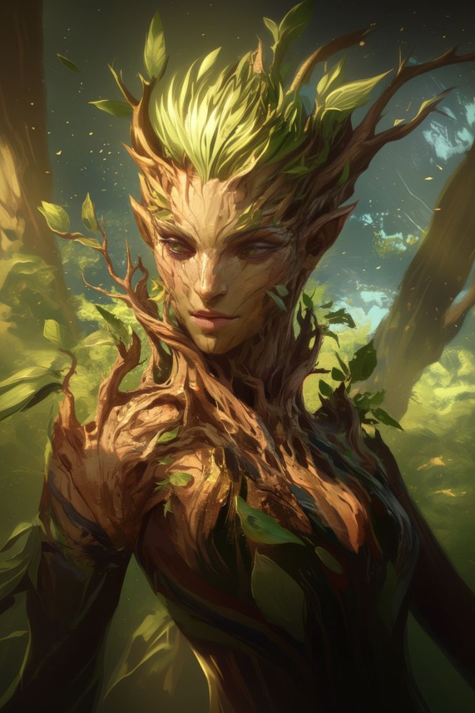
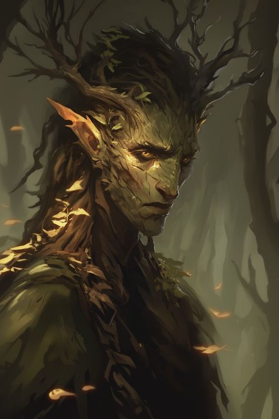
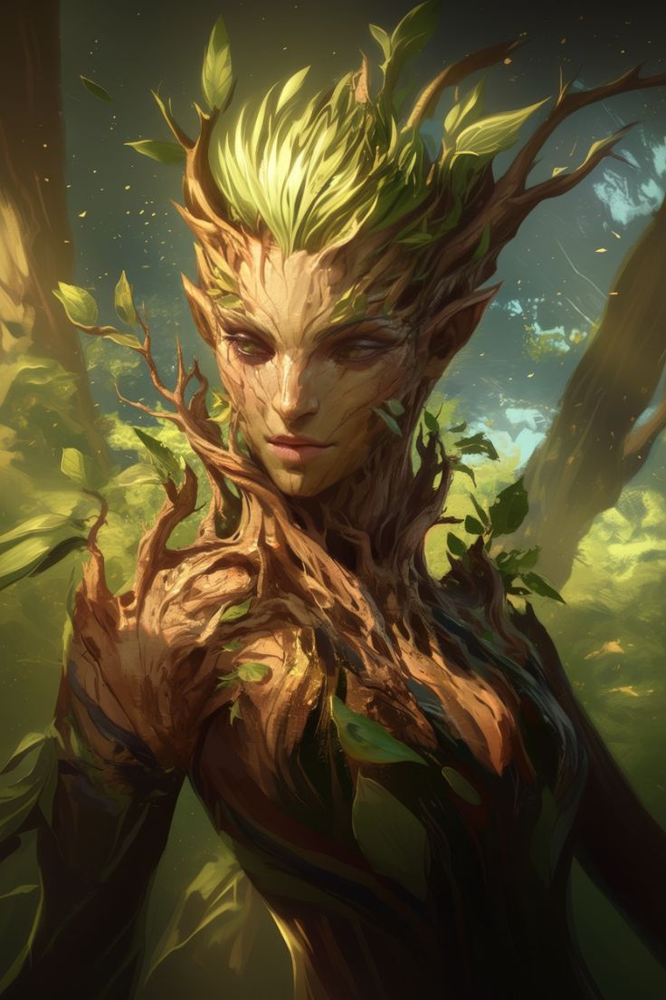
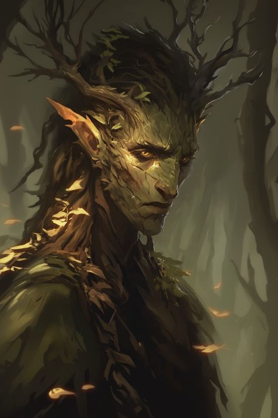

Dryads are beings of living wood and sap, guardians of secluded groves and ancient spirits. They coexist closely with Sylvanian elves, sharing values, culture, and an intimate reverence for the forest. While Dryads understand elven society, they rarely partake in it fully, preferring the quiet sanctuaries hidden deep within the wilderness.
Their temperament contrasts sharply with that of their long-standing counterparts, the Nymphs. Though both peoples embody nature, they do so through very different philosophies. Dryads are direct, unwavering, and at times uncompromising—living embodiments of the forest’s immutable laws. Nymphs, on the other hand, tend to be fluid, playful, charming, and subtly unpredictable.
This divergence often leads to a gentle rivalry: Dryads view Nymphs as overly capricious and lacking discipline, while Nymphs see Dryads as overly rigid and humorless. These tensions are rarely hostile, but they shape centuries of cultural teasing, disagreements, and competitive pride between the two races.
Despite this, when the forest is threatened, Dryads stand among its fiercest protectors, wielding ancient strength and deep-rooted resolve.
Not to be confused with treants, which is a monstrous version of this people.
Skills: Spellcasting, Survival, Meditation, Craftsmanship, Erudition, Defense, Hunting, Subterfuge.
Personality traits: Calm, Patient, Conservative, Community-minded, Principled, Serious, Forgiving, Warm, Measured, Cautious.
Strong attributes: Constitution, Wisdom
Weak attributes: None
Birth attributes: Stature 10~11, Height 10, Ego 10~11, Appearance 8~10, Luck 10
Racial modifiers: Constitution +1, Willpower +1, Strength –1, Wits –1
Creation access: Free
Allegiance: Nature, Magic, or None
Living environment: Forest
Birth particularity: Passive Trait (Absorption +6, does not stack with armor)
Cultural particularity: Forest Affinity (1), Strengthened Allegiance (1), Wood Affinity (1)
Origins: This information has not yet been written down
Family: Small Folks
Nature: Pure or Impure Beings
Celestial


Celestials are radiant beings who dwell high above Thalifen on floating islands where order, law, and discipline form the core of civilization. They do not concern themselves with moral “good,” but rather with absolute order, which they see as the foundation of existence. Their society is rigid and structured, where every action is regulated and every transgression is a sacrilege.
Those who violate these sacred rules face exile—a punishment more severe than death for a Celestial. Most inhabitants of Thalifen have only ever encountered these exiles, for the Celestial realm remains almost entirely inaccessible to mortals. Even stripped of their status, exiled Celestials often retain the pride and aloofness of their people, viewing the world below as chaotic, primitive, and unbearably undisciplined.
Yet exceptions exist. Throughout history, a handful of Celestials have forged meaningful bonds with terrestrial peoples, such as the famed Alluren, whose exile aided the creation of Sylvengarde. Some Celestials, like the Valkyries, even allow themselves to be venerated by mortal cultures, acting as martial spirits or divine emissaries.
A Celestial’s presence commands respect, but behind their luminous beauty lies a mind shaped by strict doctrine—and a heart rarely given freely.
Skills: Spellcasting, Erudition, Defense, Tactical, Persuasion, Meditation, Leadership, Endurance.
Personality traits: Serious, Principled, Conservative, Organized, Disciplined, Leader, Cold, Patient, Judgmental (Critical), Conformist.
Strong attributes: Charisma, Willpower (x2), Magic (x2)
Weak attributes: Perception, Cunning
Birth attributes: Stature 10, Height 10, Ego 12~13, Appearance 11~12, Luck 5~7
Racial modifiers: Constitution +1, Willpower +1, Wits –1, Agility –1
Creation access: Free
Allegiance: Magic or None
Living environment: City-dwelling, Urban, Rural
Birth particularity: Winged Creature (2), Passive Trait (Determination +1)
Cultural particularity: Light Affinity (1), Order Affinity (1), Strengthened Allegiance (1)
Origins: This information has not yet been written down
Family: Divine Folks
Nature: Pure Beings
Fairies

 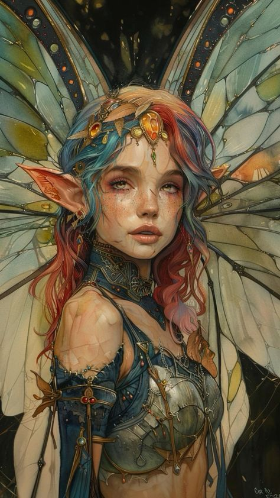
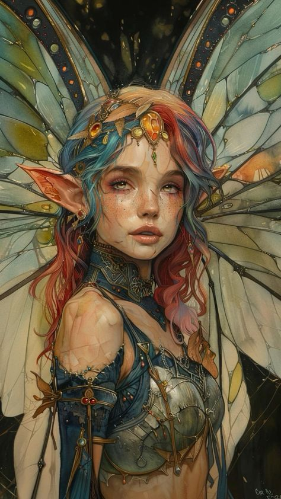

Fairies are graceful, winged beings roughly half the height of a human—slightly taller than Halflings yet far lighter. They are whimsical, capricious, and irresistibly curious, embracing life as a kaleidoscope of sensations and emotions. Their moods shift with the wind: playful laughter one moment, spiteful mischief the next.
Though often charming, Fairies are known for their volatile tempers and their notorious inability to accept defeat. A fairy scorned may unleash a cascade of pranks, illusions, or unsettling tricks—not deadly, but certainly memorable, and sometimes genuinely dangerous. The wrath of a Fairy, once provoked, can linger far longer than expected.
Their societies favor artistic expression, freedom, and the surreal logic of dreams. Fairies wander through forests and coastal regions, dancing between sunlight and moonbeams, shaping the world subtly with their magic. They are neither benevolent nor malevolent—merely true to their nature: emotional, impulsive, and endlessly enchanted by secrets and stories.
Not to be confused with pixies, which is a monstrous version of this people.
Skills: Spellcasting, Acrobatics, Discretion, Subterfuge, Persuasion, Negotiation, Finesse, Art.
Personality traits: Playful, Spontaneous, Energetic, Expressive, Curious, Emotional (Sensitive), Reckless, Opportunistic, Indulgent, Loudmouth.
Strong attributes: Cunning, Luck, Magic
Weak attributes: Strength, Constitution
Birth attributes: Stature 7, Height 5, Ego 12, Appearance 13, Luck 13
Racial modifiers: Charisma +1, Wits +1, Willpower –1, Strength –1
Creation access: Free
Allegiance: Chaos, Magic, or None
Living environment: Forest and Marine
Birth particularity: Winged Creature (3), Windborne (2), Passive Trait (Speed +3, reduced by armor)
Cultural particularity: Dream Affinity (1)
Origins: This information has not yet been written down
Family: Small Folks
Nature: Pure Beings
Qunari


The Qunari are a horned people known for their imposing stature and austere discipline. Their society follows a rigid doctrine called the Line, which teaches that every individual—regardless of strength, age, or rank—is responsible for maintaining the cohesion of the whole. Leadership among the Qunari is not fixed by birth or authority but granted temporarily to those whose competence best suits the situation, making their hierarchy fluid, adaptive, and surprisingly egalitarian.
Communities gather around large communal halls where decisions are made collectively through structured, ritualized debate. Endurance—physical, mental, and moral—is the cornerstone of Qunari identity. Emotional restraint is considered a form of wisdom, and their philosophy, although not a religion, holds that life gains meaning through discipline, clarity of purpose, and stability.
Qunari rarely assimilate into foreign cultures, which they often perceive as chaotic or lacking in foundational rigor. Still, individuals who struggle with the Line—or who simply seek a different path—sometimes abandon their homeland, becoming wanderers, mercenaries, or diplomats of circumstance.
Despite their stoic exterior, Qunari are not emotionless. They simply shape their emotions as they shape their bodies. Even those of frail build are expected to cultivate strength of mind and duty. Outsiders often misinterpret their seriousness as humorless solemnity, yet Qunari communities prize a form of ritualized irony: a dry, expressionless wit exchanged without smiles—both a cultural bonding tool and a subtle test of intellect. To most foreigners, this is as incomprehensible as it is unsettling.
<> Qunaris possess what scholars call the Memory of Iron: Their horn structure contains dense mineral fibers that subtly vibrate in the presence of emotional tension. Trained Qunaris can “read” these vibrations in others of their kin, sensing anxiety, aggression, hesitation, or determination without a word spoken. This gives them exceptional synchronicity in combat formations and makes Qunari warbands notoriously difficult to outmaneuver.
Skills: Melee, Tactical, Endurance, Leadership, Defense, Athletics, Persuasion, Survival.
Personality traits: Disciplined, Serious, Organized, Stoic, Leader, Conservative, Loyal, Measured, Cautious, Unshakeable.
Strong attributes: Strength, Dexterity, Charisma, Willpower
Weak attributes: Luck, Balance
Birth attributes: Stature 11, Height 11, Ego 11, Appearance 9, Luck 8
Racial modifiers: Strength +1, Agility +1, Wits –1, Perception –1
Creation access: Free
Allegiance: Ankou or None
Living environment: Rural, City-dwelling, or Mountain
Birth particularity: Horns (2), Passive Trait (Threat Zone +1)
Cultural particularity: Faith Affinity (1)
Origins: This information has not yet been written down
Family: Horned Folks
Nature: Impure Beings
Nymphs


Nymphs are nature-born beings traditionally associated with forests, rivers, and glades. Though admired for their elegance, they are far from the idealized figures depicted in human folklore. Their culture is shaped by duality: gentleness and mischief, serenity and volatility. Nymphs value emotional expression as much as Dryads value structure, creating a longstanding cultural tension between the two peoples.
In Nymph society, decisions are taken through circles, communal gatherings where opinions are weighed not by authority but by persuasive ability—a trait they cultivate rigorously from youth. They cherish beauty not as ornament, but as a form of truth, believing that aesthetics reflect the inner state of beings and environments.
Though peaceful in appearance, Nymphs possess a sharp sense of pride and can react strongly to disrespect or broken promises. Their relationships with outsiders tend to be selective: they are welcoming to those who show sensitivity to nature, yet distant or even playful-cruel toward those who do not.
Unlike Dryads, who embody the stern, immutable laws of the forest, Nymphs represent its fluidity—its charm, its illusions, its gentler yet unpredictable rhythms. They embrace sensibility, diplomacy, and intuition, making them subtle negotiators and enchanting speakers. Their playful nature, however, masks a keen intellect and a deep understanding of the emotional currents around them. Tensions with Dryads stem from these philosophical differences: Dryads see Nymphs as too indulgent and whimsical, while Nymphs find Dryads overly rigid and lacking in joy. Still, despite this rivalry, the two peoples stand united when nature calls for protectors.
<> Nymphs possess the Echo of Emotion: any strong feeling expressed near them leaves behind a faint, temporary impression—an echo—visible only to their senses. These echoes take the form of glimmers, subtle colors, or vibrations in the air, allowing Nymphs to read emotional “trails” left by others. This makes them extraordinary mediators… and dangerously insightful antagonists.
Skills: Spellcasting, Survival, Meditation, Craftsmanship, Defense, Finesse, Negotiation, Swimming.
Personality traits: Warm, Expressive, Curious, Sensitive, Persuasive (Confident), Community-minded, Indulgent, Opportunistic, Reactive (Impatient), Bright.
Strong attributes: Charisma (x2), Wisdom
Weak attributes: Balance
Birth attributes: Stature 9, Height 9, Ego 10, Appearance 14, Luck 8
Racial modifiers: Wisdom +1, Intelligence +1, Strength –1, Constitution –1
Creation access: Free
Allegiance: Magic or None
Living environment: Forest
Birth particularity: Favored Mind (1), Passive Trait (Speed +1)
Cultural particularity: Oratory Affinity (1)
Origins: This information has not yet been written down
Family: Wild Folks
Nature: Pure Beings
Trolls


Trolls are a nomadic horned people whose origins remain one of Thalifen’s cultural enigmas. The few records that mention them describe their arrival from the far southern reaches of the world—lands believed lost to Morvivance. Whether they fled, migrated, or simply wandered remains unknown even to them, as Troll oral traditions are fragmented and contradictory.
Troll society is defined by absolute personal autonomy. They acknowledge no chiefs, masters, or formal structures; authority is a foreign concept to them. Cooperation arises organically through mutual respect or shared goals, and conflicts are resolved through debate, contests of wits, or ritual duels intended to defuse tension rather than establish dominance.
Highly adaptive, Trolls travel in small caravans or as lone wanderers, guided by instinct and a deep cultural belief that stagnation is a form of death. Their craftsmanship is unexpectedly refined, often using unusual materials collected during their travels. Outsiders find them difficult to categorize: simultaneously contemplative and fierce, hospitable and aloof, unpredictable yet bound by a strong sense of personal honor.
Because so few Trolls have been seen in Thalifen, they remain shrouded in speculation, often romanticized or misunderstood by scholars.
<> Trolls wield the Pulse of Chaos, a dormant resonance within their blood inherited from their forgotten homeland. This pulse reacts to powerful magic, emotional upheaval, or mortal danger, manifesting as flickers of colored light beneath their skin and granting them brief surges of instinctual clarity or strength.
Skills: Melee, Brawl, Endurance, Survival, Subterfuge, Defense, Tactical, Craftsmanship.
Personality traits: Stoic, Enduring (Hardworking), Independent, Gloomy, Cautious, Resourceful, Patient, Principled, Quiet, Unshakeable.
Strong attributes: Intelligence, Willpower, Balance, Magic or Logic
Weak attributes: Luck, Wisdom
Birth attributes: Stature 10, Height 10, Ego 12, Appearance 10, Luck 6
Racial modifiers: Constitution +1, Willpower +1, Perception –1, Wisdom –1
Creation access: Free
Allegiance: Nature, Source, Ankou, or None
Living environment: Subterranean
Birth particularity: Chaos Affinity (1), Natural Recovery (2), Natural Regeneration (2), Horns (1)
Cultural particularity: Strengthened Allegiance (1)
Origins: This information has not yet been written down
Family: Horned Folks
Nature: Pure or Impure Beings
Semie ethnics
Naggan


Naggan are serpentfolk descended from ancient lineages that once thrived behind the protective walls of Rosaï. They are recognized by their serpentine tails, shimmering scales, and calm, deliberate manner of speech. Though humanoid in stature, their physical and spiritual heritage ties them deeply to the forgotten age when Primordial Dragons still brushed against the world.
Their society was once divided into several clans—each distinguished by scale coloration and cultural tradition. Many of these clans were decimated when Morvivance reached Rosaï, scattering survivors across Thalifen. Today, Naggan communities are small, secretive, and often hidden within remote societies where mistrust follows them like a shadow.
Naggan culture venerates the Primordial Dragons not as gods, but as archetypes of cosmic principles. Each clan interprets this devotion differently: some through shamanism, others through martial discipline, mysticism, or oratory tradition. Although most Naggan now live isolated lives, the old customs endure in fragments—songs, scales dyed in ritual pigments, meditative dances, and cryptic proverbs referencing the "Silenced Wyrms."
Despite their enigmatic aura, Naggan are not hostile; they are contemplative and pragmatic, their worldview shaped by the belief that destiny coils and uncoils like a serpent, unpredictable yet purposeful.
Some of most known naggan's clan are:
Cindervale Clan — Black and ember-red scales : A warrior lineage known for strict discipline and controlled rage. They viewed destruction as a path to renewal, echoing the Ashen Serpent’s teachings. Today, survivors wander as stoic mercenaries, bound by rigid personal honor.
Glistenscale Clan — Iridescent blue and green scales : Mystics and shamans who practiced water-based divination and dream-trance rites. They believe memories flow like rivers and that the Primordials still whisper through them. Many now live near coasts or waterways.
Sandcoil Clan — Gold and desert tones : Survivalists shaped by harsh environments, valuing patience, silence, and adaptability. Inspired by the Dune Wyrm, they mastered ambush tactics and desert navigation. Their remnants drift between remote desert communities.
Verdancescale Clan — Green and earth-toned scales : Diplomats, negotiators, and keepers of social balance. Their ritual debates followed spiral patterns symbolizing growth and resolution. They integrate more easily into forest societies, though still as outsiders.
Lumenscale Clan — White and pale lavender scales : Students of karmic flows, illusions, and hidden forces. Their insight is uncanny and often unsettling to others. They suffered greatly during Rosaï’s fall, leaving only scattered scholars and occultists.
Not to be confused with nagas, which is a monstrous version of this people.
Skills: Spellcasting, Subterfuge, Melee, Persuasion, Survival, Tactical, Negotiation, Defense.
Personality traits: Calm, Calculative, Secretive, Cautious, Opportunistic, Loyal, Disciplined, Measured, Independent, Curious.
Strong attributes: Agility, Intelligence/Cunning/Willpower/wisdom (choose one)
Weak attributes: None
Birth attributes: Stature 10, Height 10, Ego 10, Appearance 11, Luck 9
Racial modifiers: Perception +1, Charisma +1, Constitution –1, Wits –1
Creation access: Free
Allegiance: Magic, Chaos, or None
Living environment: Forest, Mountain, Desert, or Marine
Birth particularity: Tail (2), Variable Size (4), Karmic Vision (1)
Cultural particularity: None
Origins: This information has not yet been written down
Family: Serpentfolk / Semies
Centauran


Centaurans are an ancient semi-equine people whose culture blends warrior tradition with ritual wisdom. Proud and fiercely independent, they live in secluded forest enclaves where every aspect of life—craft, combat, diplomacy, even travel—is governed by elaborate customs passed down through long oral lineages. To outsiders, these customs often seem cryptic or overly formal, but to Centaurans they are the foundation of balance and honor.
Their society values strength of body as much as clarity of purpose. Centaurans rarely involve themselves in the affairs of other peoples, believing that most humanoids lack the discipline and respect necessary to navigate Centauran etiquette. Yet, when they choose to act, they do so with solemn conviction and strategic foresight.
Regarded as both protectors and omens by nearby communities, Centaurans maintain an aura of mystique. They act neither as sages nor savages—simply as guardians of their own path, bound to traditions older than most written histories.
Not to be confused with centaurs, which is a monstrous version of this people.
Skills: Melee, Tactical, Endurance, Leadership, Survival, Athletics, Persuasion, Defense.
Personality traits: Serious, Principled, Conservative, Community-minded, Leader, Disciplined, Patient, Proud (Pretentious), Cautious, Hardworking.
Strong attributes: Strength, Agility, Willpower
Weak attributes: Intelligence
Birth attributes: Stature 11, Height 12, Ego 11, Appearance 9, Luck 8
Racial modifiers: Strength +1, Agility +1, Wits –1, Intelligence –1
Creation access: Free
Allegiance: Source, Magic, Ankou, or None
Living environment: Forest
Birth particularity: Quadruped
Cultural particularity: Custom Affinity (1)
Origins: This information has not yet been written down
Family: Equine Beings / Semies
Undine


Undines are semi-aquatic beings shaped by ancient oceanic magic, capable of shifting their lower body between a sleek piscine tail and a pair of scaled, amphibious legs. This adaptation allows them to walk on land with surprising agility, though never without discomfort: Undines are biologically and psychologically bound to water. Without regular immersion or at least sustained contact with moisture, they grow anxious, then disoriented, and after a week of complete dryness, their bodies begin to fail.
Their underwater cities—grown from coral, living stone, and bioluminescent reefs—follow the principle of harmonic flow, a philosophy teaching that decisions must align with emotional and environmental currents. This gives Undines an air of serenity and contemplation, though their communication, rich in subtle gestures and shifts of “emotional currents,” often perplexes surface-dwellers.
While generally peaceful, they are not passive: Undines possess long memories and a wary eye toward land cultures. Some live as emissaries or negotiators between sea and shore, but most prefer the safety of their submerged sanctuaries, venturing onto land only with purpose—and always keeping a path back to the water.
Skills: Spellcasting, Swimming, Survival, Craftsmanship, Defense, Negotiation, Persuasion, Tactical.
Personality traits: Calm, Measured, Patient, Principled, Community-minded, Welcoming, Cautious, Modest, Sensitive, Organized.
Strong attributes: Perception, Willpower
Weak attributes: None
Birth attributes: Stature 10, Height 10, Ego 9, Appearance 10, Luck 11
Racial modifiers: Wisdom +1, Agility +1, Dexterity –1, Intelligence –1
Creation access: Free
Allegiance: Source, Magic, or None
Living environment: Marine
Birth particularity: Amphibious (3), Tail (1), Passive Trait (Lowest Defense +1)
Cultural particularity: Aquatic Affinity (1)
Origins: This information has not yet been written down
Family: Marine Beings / Semies
Drakkan
 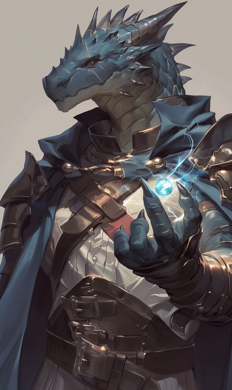
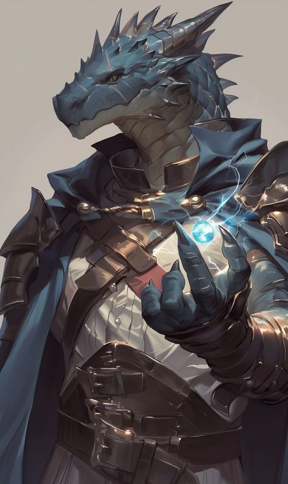


The Drakkan are descendants of ancient dragons whose origins stretch so far back in time that no living people can recount them with certainty. Their existence predates most written histories, and even the oldest traditions speak of them only in fragments—stories of great wyrms who once walked the world and left behind mortal offspring. Whether these dragons took physical form, shifted shapes, or begot children through more mystical means is unknown; what remains undeniable is that the Drakkan carry the unmistakable mark of dragonkind.
Recognizable by their horns, scaled skin, powerful physiques, tails, and vestigial wings, Drakkan embody the traits of the Primordial Dragons they descend from. Each lineage reflects the temperament of its progenitor: fiery ambition from Tiamat, resilience and wisdom from Prometheus, cunning fluidity from Leviathan, competitive energy from Aquilon, sharp insight or shadowed instinct from Bahamut, rigid justice from Chromium, or mystical intellect from Arcanum.
Their past is heavy. Long ago, Drakkan civilizations rose to frightening heights, driven by pride, power, or loyalty to their draconic blood. Their wars—sometimes among themselves, sometimes against other peoples—were so devastating that entire nations united simply to survive them. Though these conflicts are long gone, the memory persists. Many Drakkan today bear the burden of that legacy, living under suspicion or outright fear from other cultures.
Drakkan communities are rare and scattered. Some embrace ancient customs; others reject their heritage, attempting to build humbler lives far from the weight of legend. A few even try to restore a lost sense of honor, arguing that the sins of their ancestors should not define them. Yet everywhere they go, their lineage precedes them—respected by some, distrusted by many, and treated as living artifacts of an age forgotten.
The Primordial Dragons themselves have vanished, believed by scholars either dead, slumbering, or wandering worlds beyond reach. Drakkan grow up surrounded by tales of these forebears, though none can claim to truly know them. Still, denying the connection is considered foolish—perhaps even dangerous—for it is said that nothing angers a Drakkan more than mocking the truth they carry in their blood.
Red (Tiamat): Children of the dragon of fire and war, they embody raw strength, wrath, and leadership. Highly persuasive and influential, they dominate through combat skills (Melee, Brawl) and tactical prowess. Magic is also present, often tied to fire. Strong attributes: Strength, Charisma
Green (Prometheus): Children of the dragon of earth and wisdom, these Spawns are calm, thoughtful, and resilient. Focused on survival and craftsmanship, they excel in tasks requiring endurance and defense. Their knowledge (Erudition) makes them wise advisors and peaceful leaders. Strong attributes: Constitution, Willpower
Blue (Leviathan): Descendants of the dragon of waters, these Spawns are quick, agile, and skilled at aquatic navigation (Swimming, Acrobatics). Subtle, persuasive, and opportunistic, they rely on finesse and survival skills to adapt to any situation. Strong attributes: Dexterity, Intelligence
Yellow (Aquilon): Children of the dragon of skies, they are energetic, social, and adept at trade interactions. Athletic and competitive, they excel in physical skills (Athletics, Acrobatics) and are strong leaders with a social edge (Persuasion, Negotiation). Strong attributes: Agility, Cunning
Black (Bahamut): Children of the dragon of chaos and shadows, they are cunning and adept at subterfuge. Skilled in spellcrafting and tactical arts, they are formidable manipulators and stealth combatants, known for their survival instincts and strategic prowess. Strong attributes: Two different physical attributes
White (Chromium): Children of the dragon of virtue and justice, these Spawns are eloquent, disciplined, and dedicated defenders. Highly respected, they focus on defense, leadership, and strategy (Tactical), complemented by magic to uphold order. Strong attributes: Two different mental attributes
Purple (Arcanum): Descendants of the dragon of sorcery and mysticism, they are wise, scholarly, and possess strong magical abilities (Spellcasting, Spellcrafting). Drawn to erudition and meditation, they are mystics and artisans in pursuit of knowledge and mastery of the arcane. Strong attributes: Magic and one of the mental attribute
Drakkan spawns:
- Red (Tiamat) : Melee, Endurance, Persuasion, Spellcasting, Tactical, Leadership, Brawl, Defense.
- Green (Prometheus) : Endurance, Craftsmanship, Erudition, Survival, Melee, Tactical, Defense, Leadership.
- Blue (Leviathan) : Swimming, Acrobatics, Melee, Subterfuge, Persuasion, Finesse, Brawl, Survival.
- Yellow (Aquilon) : Athletics, Melee, Persuasion, Finesse, Leadership, Acrobatics, Negotiation, Survival.
- Black (Bahamut) : Subterfuge, Melee, Tactical, Discretion, Persuasion, Brawl, Spellcrafting, Survival.
- White (Chromium) : Persuasion, Leadership, Defense, Erudition, Spellcasting, Tactical, Negotiation, Endurance.
- Purple (Arcanum) : Spellcasting, Erudition, Meditation, Spellcrafting, Persuasion, Craftsmanship, Tactical, Leadership.
Skills: Melee, Spellcasting, Endurance, Tactical, Leadership, Persuasion, Athletics, Defense.
Personality traits: Depends on heritage.
Strong attributes: This information has not yet been written down
Weak attributes: This information has not yet been written down
Birth attributes: Stature 11, Height 11, Ego 12, Appearance 8, Luck 8
Racial modifiers: Constitution +1, Strength +1, Perception –1, Charisma –1
Creation access: Free
Allegiance: Magic, Ankou, or None
Living environment: Desert, Mountain, or Subterranean
Birth particularity: Winged Creature (2), Natural Weapons (Claws) (1), Tail (2), Horns (1)
Cultural particularity: Origin-Specific Environment Affinity (1), Strengthened Allegiance (1)
Origins: This information has not yet been written down
Family: Draconic Beings
Notes :
Tiamat (Red Dragon): Environment: Heat
Leviathan (Blue Dragon): Environment: Aquatic
Prometheus (Green Dragon): Environment: Forest
Aquilon (Yellow Dragon): Environment: Mountain
Chromium (White Dragon): Environment: Frozen / Cold
Vermine ethnics
Ogren


Ogrens are massive (gargantuan even) humanoids, descended from ancient ogres yet far more structured and civilized than their monstrous kin. Their imposing physiques, ritual markings, and sheer presence command attention. Though often perceived as brutes, Ogrens possess a practical, earthy intelligence shaped by survival rather than theory.
They inhabit harsh deserts and mountains, living in tight-knit clans centered around endurance, strength, and ancestral trials. To an Ogren, identity is earned through hardship: surviving the world is a rite in itself. While their past conflicts with other peoples have given them an intimidating reputation, those who look beyond their size discover a loyal, honest folk—remarkably skilled in stonecraft, forging, and pragmatic engineering.
Not to be confused with ogre, which is a monstrous version of this people.
Skills: Melee, Endurance, Brawl, Craftsmanship, Defense, Survival, Athletics, Tactical.
Personality traits: Imposing, Aggressive, Hardworking, Loyal, Direct (Rude), Reckless, Community-minded, Stubborn, Fearless, Resourceful.
Strong attributes: Strength, Constitution (x2), Willpower
Weak attributes: Luck
Birth attributes: Stature 12~14, Height 12~14, Ego 8, Appearance 6, Luck 8~10
Racial modifiers: Constitution +1, Strength +1, Agility –1, Dexterity –1
Creation access: Costs 2 PP
Allegiance: Nature, Ankou, or None
Living environment: Desert or Mountain
Birth particularity: Natural Regeneration (2), Favored Physique (1), Force of Nature (2)
Cultural particularity: Blood Affinity (1), Strengthened Allegiance (1)
Origins: This information has not yet been written down
Family: Gargantuan Beings / Aberrations
Orkkan


Orkkans, sometimes called “half-orcs,” are a warrior people shaped by relentless environments and an even harsher history. Their powerful frames, pronounced tusks, and resilient skin speak of a life defined by struggle. In Orkkan society, adversity is not merely endured—it is honored. Strength, rivalry, and tenacity form the core of their culture.
Primarily nomadic, Orkkans travel across deserts, jungles, coasts, and underground territories, adapting with surprising ease. Their long-standing conflicts with humans have created mutual mistrust, passed down through generations. Yet Orkkans are far from mindless brutes: they possess a fierce sense of honor, deep clan loyalty, and a cultural respect for those who prove themselves through action rather than words.
Not to be confused with orcs, which is a monstrous version of this people.
Skills: Melee, Endurance, Tactical, Leadership, Brawl, Athletics, Defense, Survival.
Personality traits: Aggressive, Fearless, Rebellious, Loyal, Energetic, Reckless, Community-minded, Stubborn, Competitive (Ambitious), Impatient.
Strong attributes: Strength, Dexterity, Constitution
Weak attributes: Luck
Birth attributes: Stature 12, Height 11, Ego 11, Appearance 7, Luck 10
Racial modifiers: Constitution +1, Agility +1, Wisdom –1, Intelligence –1
Creation access: Free
Allegiance: Source, Ankou, or None
Living environment: Rural, Desert, Nomadic, Marine, or Subterranean
Birth particularity: Passive Trait (Toughness +1)
Cultural particularity: Rivalry & Adversity Affinity (1), Vermin Instinct, Strengthened Allegiance (1), Human Animosity (1)
Origins: This information has not yet been written down
Family: Aberrations
Gablin


Gablins, civilized cousins of monstrous goblins, are small, sharp-minded, and irrepressibly resourceful. Quick of hand and quicker of wit, they thrive in cramped alleys, bustling cities, and subterranean networks. Their society revolves around improvisation, cunning, and adaptability—traits that let them survive where others falter.
Although often mistrusted, Gablins maintain complex social structures based on extended families or craft-and-thief guilds. They excel in improvised engineering, erratic chemistry, stealth, negotiation, and the creative reinterpretation of ownership. Where something needs fixing, repurposing, acquiring, or quietly relocating, a Gablin is rarely far behind—usually grinning while doing it.
Not to be confused with goblins, which is a monstrous version of this people.
Skills: Larceny, Discretion, Subterfuge, Survival, Acrobatics, Brawl, Finesse, Negotiation.
Personality traits: Opportunistic, Curious, Resourceful, Spontaneous, Talkative (Loudmouth), Chaotic, Cautious, Envious, Independent, Playful.
Strong attributes: Dexterity, Agility, Cunning, Logic
Weak attributes: Strength, Willpower
Birth attributes: This information has not yet been written down
Creation access: This information has not yet been written down
Allegiance: This information has not yet been written down
Living environment: This information has not yet been written down
Birth particularity: This information has not yet been written down
Cultural particularity: This information has not yet been written down
Origins: This information has not yet been written down
Family: Aberrations
Particularities
Strengthened Allegiance (X)
Description: The character is entirely devoted to their cause, if they have one.
Effect: Increases the impact of allegiance. All bonuses and penalties granted by allegiance are increased by (X).
Affinity with […]
Description: The character is particularly comfortable in a specific environment or when handling a specific material. This gives them an advantage that others do not necessarily share.
Effect:
- If it is an environment: The character gains a singularity bonus increased by 2×(X) when performing a singularity in the designated environment.
- If it is a material: The character gains a singularity bonus increased by 2×(X) when performing a singularity while manipulating the designated material during crafting attempts.
Amphibious
Description: The character can move in water without constraints.
Effect:
- (1): Normal speed and movement. Normal maneuverability (45°).
- (2): Speed and movement increased by half. Good maneuverability (90°).
- (3): Speed and movement doubled. Excellent maneuverability (180°).
Winged Creature
Description: The character can move through the air.
Effect:
- (1): Speed and movement are halved. Poor maneuverability (45°).
- (2): Normal speed and movement. Good maneuverability (90°).
- (3): Speed and movement increased by half. Excellent maneuverability (180°).
Quadruped
Description: The character is able to move particularly quickly but with reduced maneuverability.
Effect: Movement is always doubled, but maneuverability is only good (90°).
Night Vision
Description: The character can perceive very small variations of light.
Effect:
- (1): The character can see in darkness.
- (2): The character can see in total darkness.
Animosity toward […]
Description: The character feels deep hatred for a type of creature, often due to ancestral conflicts.
Effect: Grants the character a (X) bonus to all tests aimed at harming or defending against targets of that creature type.
Modifiable Size
Description: Some beings (e.g. naggans) have very long tails and usually keep a “normal” size but can change it when needed.
Effect: The character can reduce or increase their size as a simple action. Minimum size is the character’s base size; maximum size can be equal to this value plus (X).
Appendage: Tail
Description: Humanoids with a tail can use it in various situations.
Effect: The character can use their tail to perform actions: defend from behind, knock someone down, stop someone, etc. Logic prevails. In all cases, skills and attribute modifiers are capped at (X) when the tail is used.
Appendage: Horn
Description: Horns can be particularly impressive.
Effect: The character can use their horn during manipulation attempts and gains a (X) bonus to such tests.
Black Cat
Description: The character brings bad luck to everyone who comes near them.
Effect: This trait prevents anyone within the character’s presence zone (allies and enemies alike) from using Luck.
Condition: Black fur.
Recovery (X)
Description: The character recovers extremely quickly.
Effect: Grants the character fast recovery of endurance. Each round, endurance is restored by 2×(X).
Regeneration (X)
Description: The character regenerates wounds very quickly.
Effect: Grants rapid regeneration of vitality and mental health. Each round, these are restored by (X). An equivalent amount of fatigue is generated when regeneration occurs.
Force of Nature (X)
Description: The character has prodigious Strength and Constitution but is less quick-witted.
Effect:
- Adds (X) to racial Strength and Constitution modifiers.
- The character receives a (X) penalty to initiative tests.
- Their speed is reduced by 1 for every 2×(X).
Windborne (X)
Description: The character has surprising speed due to a frail but swift body.
Effect:
- Subtracts (X) from racial Strength and Constitution modifiers.
- The character receives a (X) bonus to initiative tests.
- Their speed is increased by 1 for every 2×(X).
Karmic Vision
Description: The character can see a person’s karmic aura, revealing immaterial parameters.
Effect:
When focusing on it, the character sees an aura around each individual, composed of many facets that can be roughly described by its colors and nuances. The aura reveals:
- Health-related aspects: vitality, mental health, fatigue, chi, mana, karma — current and maximum.
- It can also reveal qualities, flaws, personality (character/behavior), moral alignment, etc., though this requires an appropriate test (e.g. Empathy).
The character learns as many elements as their success level allows.
Fear Sense (X)
Description: The character can sense fear as if it were a smell. This is a trait shared by predators.
Effect: The character can sense fear like a scent. A suitable test allows them to locate and track a frightened being. Such tests receive a (X) bonus.
Danger Sense (X)
Description: The character can sense danger as if it were a smell. This is a trait shared by peaceful feral beings.
Effect: The character can sense danger as if it were a smell. The danger must meet a specific condition: it must come from a being who is planning the character’s death. Tests to detect such danger receive a (X) bonus.
Freedom Instinct
Description: The character has a sixth sense regarding their freedom.
Effect:
This trait allows the character to:
- Sense and find paths that could lead to freedom, and gain advantage on tests related to opening, escaping, or bypassing what restricts their freedom.
- Within an area equal to 50% of Wisdom in m², the character always knows whether there is an exit or not (though this doesn’t help them find or open it).
Vermin Instinct
Description: The character has a sixth sense for identifying who is weak, dominant, etc.
Effect:
- The character can identify who is the weakest and the strongest within a group, and whether an individual can rival them or not, gaining advantage on such tests.
- Within an area equal to 50% of Willpower in m², the character always knows if a weak being is present (though this doesn’t help locate them precisely).
Blood Instinct
Description: The character has a sixth sense regarding the presence of blood.
Effect:
- The character can detect if blood is present and more easily track it, gaining advantage on such tests.
- Within an area equal to 50% of Willpower in m², the character always knows if there is blood or not (though this doesn’t help locate it precisely).
Curious Instinct
Description: The character has a sixth sense regarding secrets.
Effect:
- The character can tell if a secret or some kind of curiosity remains hidden within a modestly sized environment, gaining advantage on related tests.
- Within an area equal to 50% of Wits in m², the character always knows if there is a secret present (though this doesn’t help them find it).
Feline Instinct
Description: The character has a sixth sense related to acrobatics, jumps, leaps, and similar movements.
Effect:
- The character is capable of impressive acrobatics, jumps, leaps, and climbs, gaining advantage on such tests.
- Within an area equal to 50% of Wits in m², the character always knows if there is a path allowing them to bypass an obstacle, wall, etc. (but not how to use it).
Hunting Instinct
Description: The character has a sixth sense regarding hunting small game.
Effect:
- The character is particularly skilled at hunting to feed themselves, gaining advantage on such tests.
- Within an area equal to 50% of Wisdom in m², the character always knows if small game is present (though this doesn’t guarantee catching it).
Pack Instinct
Description: The character has a sixth sense regarding those they consider part of their pack.
Effect:
- The character finds it easier to track down an “ally,” gaining advantage on such tests.
- Within an area equal to Wisdom in m², the character always knows if a friend is nearby (though this doesn’t help locate them precisely).
Enraged Instinct
Description: The character is particularly skilled at entering a state of rage.
Effect: Grants advantage on “Rage Surge” tests (or their equivalent in duels/jousts).
Bestial Instinct
Description: The character is particularly skilled at channeling their adrenaline.
Effect: Grants advantage on “Adrenaline Surge” tests (or their equivalent in duels/jousts).
Survival Instinct
Description: The character is particularly skilled at reinforcing their guard.
Effect: Grants advantage on “Guard Surge” tests (or their equivalent in duels/jousts).
Alert Instinct
Description: The character has a sixth sense regarding ambushes and traps.
Effect:
- The character is better at spotting traps and ambushes, gaining advantage on such tests.
- Within an area equal to Wisdom in m², the character always knows if there is a trap or a hidden being (though this doesn’t help locate it precisely).
Venal Instinct
Description: The character has a sixth sense regarding gold and all kinds of wealth.
Effect:
- The character is better at noticing what has value, especially gold, gems, and precious metals, gaining advantage on such tests.
- Within an area equal to Wits in m², the character always knows if there is some lootable wealth nearby (though this doesn’t help locate or grab it).
Authority
Effect: This trait grants the character the involuntary ability to affect nearby allies by granting them a +1 bonus whenever they use Luck. The character benefits from this as well.
Tenacity
Effect: This trait grants the character the involuntary ability to affect nearby allies by granting them a +1 bonus to tests when they are in mortal danger. The character also benefits from this. The GM decides if failing a test could directly cause death or heavily contribute to it.
Stealth
Effect: This trait grants the character the involuntary ability to affect nearby allies and themselves by granting a +1 bonus to all tests involving stealth, silence, or remaining unnoticed.
Adversity
Effect: This trait grants the character the involuntary ability to affect nearby allies and themselves by granting a +1 bonus to tests when they are wounded during the current round.
Insight
Effect: This trait grants the character the involuntary ability to affect nearby allies and themselves by granting a +1 bonus to all memory or knowledge tests.
Lucidity
Effect: This trait grants the character the involuntary ability to affect nearby allies and themselves by granting a +1 bonus to all perception tests, etc., when they are alert (never while sleeping or not paying attention).
This bonus only applies when the character is actively attempting the test, not when it is imposed on them without their knowledge.
Boldness
Effect: This trait grants the character the involuntary ability to affect nearby allies and themselves by granting a +1 bonus to all tests when performing something dangerous or contrary to common sense.
Swiftness
Effect: This trait grants the character the involuntary ability to affect nearby allies and themselves by granting a +1 bonus to all tests where being the fastest is key.
Firmness
Effect: This trait grants the character the involuntary ability to affect nearby allies and themselves by granting a +1 bonus to tests aimed at ending a condition.
This does not allow them to avoid the effect at the moment it occurs, only to get rid of it afterwards.
Passive Trait
Effect: This trait grants the character a passive advantage in the form of a constant bonus. The bonus is usually small, but can still make a difference.
Active Trait
Effect: This trait grants the character an active advantage in the form of a temporary bonus. The bonus is usually quite large but lasts only a short time (3 rounds) or a very short time (a single round). The character can use it once per day.